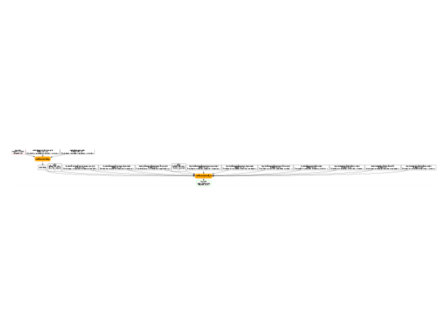

Note
Go to the end to download the full example code.
to_onnx and submodules from LLMs
Big models are hard to read once converted into onnx. Lets see how to improve their readibility. The code is inspired from LLM from scratch with Pytorch.
A simple LLM
All comments were removed from the code to make it less verbose. A few fixes were applied to the original code.
import onnx
from onnx.inliner import inline_local_functions
from onnx_array_api.plotting.graphviz_helper import plot_dot
from onnx_array_api.reference import compare_onnx_execution
import torch
from onnxruntime import InferenceSession
from experimental_experiment.torch_interpreter import to_onnx
from experimental_experiment.helpers import pretty_onnx
from experimental_experiment.bench_run import max_diff
from experimental_experiment.xbuilder import OptimizationOptions
class Embedding(torch.nn.Module):
def __init__(self, vocab_size: int, embedding_dim: int):
super().__init__()
self.embedding = torch.nn.Embedding(vocab_size, embedding_dim)
self.pe = torch.nn.Embedding(vocab_size, embedding_dim)
def forward(self, x):
word_emb = self.embedding(x)
word_pe = self.pe(x)
return word_emb + word_pe
class AttentionBlock(torch.nn.Module):
def __init__(self, embedding_dim: int, context_size: int):
super().__init__()
self.query = torch.nn.Linear(embedding_dim, embedding_dim, bias=False)
self.key = torch.nn.Linear(embedding_dim, embedding_dim, bias=False)
self.value = torch.nn.Linear(embedding_dim, embedding_dim, bias=False)
ones = torch.ones(size=[context_size, context_size], dtype=torch.float)
self.register_buffer(name="mask", tensor=torch.tril(input=ones))
def forward(self, x):
B, T, C = x.size()
query = self.query(x)
key = self.key(x)
value = self.value(x)
qk = query @ key.transpose(-2, -1) * C**-0.5
attention = qk.masked_fill(self.mask[:T, :T] == 0, float("-inf"))
attention = torch.nn.functional.softmax(input=attention, dim=-1)
out = attention @ value
return out
class MultiAttentionBlock(torch.nn.Module):
def __init__(self, embedding_dim: int, num_heads: int, context_size: int):
super().__init__()
self.attention = torch.nn.ModuleList(
modules=[AttentionBlock(embedding_dim, context_size) for _ in range(num_heads)]
)
self.linear = torch.nn.Linear(
in_features=embedding_dim * num_heads, out_features=embedding_dim
)
def forward(self, x):
out = torch.cat(tensors=[attention(x) for attention in self.attention], dim=-1)
x = self.linear(out)
return x
class FeedForward(torch.nn.Module):
def __init__(self, embedding_dim: int, ff_dim: int):
super().__init__()
self.linear_1 = torch.nn.Linear(embedding_dim, ff_dim)
self.relu = torch.nn.ReLU()
self.linear_2 = torch.nn.Linear(ff_dim, embedding_dim)
def forward(self, x):
x = self.linear_1(x)
x = self.relu(x)
x = self.linear_2(x)
return x
class DecoderLayer(torch.nn.Module):
def __init__(self, embedding_dim: int, num_heads: int, context_size: int, ff_dim: int):
super().__init__()
self.attention = MultiAttentionBlock(embedding_dim, num_heads, context_size)
self.feed_forward = FeedForward(embedding_dim, ff_dim)
self.norm_1 = torch.nn.LayerNorm(normalized_shape=embedding_dim)
self.norm_2 = torch.nn.LayerNorm(normalized_shape=embedding_dim)
def forward(self, x):
x_norm = self.norm_1(x)
attention = self.attention(x_norm)
attention = attention + x
attention_norm = self.norm_2(attention)
ff = self.feed_forward(attention_norm)
ff = ff + attention
return ff
class LLM(torch.nn.Module):
def __init__(
self,
vocab_size: int = 1024,
embedding_dim: int = 16,
num_heads: int = 2,
context_size: int = 256,
ff_dim: int = 128,
):
super().__init__()
self.embedding = Embedding(vocab_size, embedding_dim)
self.decoder = DecoderLayer(embedding_dim, num_heads, context_size, ff_dim)
def forward(self, input_ids):
x = self.embedding(input_ids)
y = self.decoder(x)
return y
llm = LLM()
dim = (1, 30)
input_ids = torch.randint(0, 1024, dim).to(torch.int64)
y = llm(input_ids)
print(f"output: shape={y.shape}, min={y.min()}, max={y.max()}")
output: shape=torch.Size([1, 30, 16]), min=-4.860897541046143, max=5.530184268951416
First conversion to ONNX
The conversion relies on torch.export.export().
which gives:
ep = torch.export.export(llm, (input_ids,))
print(ep.graph)
graph():
%p_embedding_embedding_weight : [num_users=1] = placeholder[target=p_embedding_embedding_weight]
%p_embedding_pe_weight : [num_users=1] = placeholder[target=p_embedding_pe_weight]
%p_decoder_norm_1_weight : [num_users=1] = placeholder[target=p_decoder_norm_1_weight]
%p_decoder_norm_1_bias : [num_users=1] = placeholder[target=p_decoder_norm_1_bias]
%p_decoder_attention_attention_0_query_weight : [num_users=1] = placeholder[target=p_decoder_attention_attention_0_query_weight]
%p_decoder_attention_attention_0_key_weight : [num_users=1] = placeholder[target=p_decoder_attention_attention_0_key_weight]
%p_decoder_attention_attention_0_value_weight : [num_users=1] = placeholder[target=p_decoder_attention_attention_0_value_weight]
%p_decoder_attention_attention_1_query_weight : [num_users=1] = placeholder[target=p_decoder_attention_attention_1_query_weight]
%p_decoder_attention_attention_1_key_weight : [num_users=1] = placeholder[target=p_decoder_attention_attention_1_key_weight]
%p_decoder_attention_attention_1_value_weight : [num_users=1] = placeholder[target=p_decoder_attention_attention_1_value_weight]
%p_decoder_attention_linear_weight : [num_users=1] = placeholder[target=p_decoder_attention_linear_weight]
%p_decoder_attention_linear_bias : [num_users=1] = placeholder[target=p_decoder_attention_linear_bias]
%p_decoder_norm_2_weight : [num_users=1] = placeholder[target=p_decoder_norm_2_weight]
%p_decoder_norm_2_bias : [num_users=1] = placeholder[target=p_decoder_norm_2_bias]
%p_decoder_feed_forward_linear_1_weight : [num_users=1] = placeholder[target=p_decoder_feed_forward_linear_1_weight]
%p_decoder_feed_forward_linear_1_bias : [num_users=1] = placeholder[target=p_decoder_feed_forward_linear_1_bias]
%p_decoder_feed_forward_linear_2_weight : [num_users=1] = placeholder[target=p_decoder_feed_forward_linear_2_weight]
%p_decoder_feed_forward_linear_2_bias : [num_users=1] = placeholder[target=p_decoder_feed_forward_linear_2_bias]
%b_decoder_attention_attention_0_mask : [num_users=1] = placeholder[target=b_decoder_attention_attention_0_mask]
%b_decoder_attention_attention_1_mask : [num_users=1] = placeholder[target=b_decoder_attention_attention_1_mask]
%input_ids : [num_users=2] = placeholder[target=input_ids]
%embedding : [num_users=1] = call_function[target=torch.ops.aten.embedding.default](args = (%p_embedding_embedding_weight, %input_ids), kwargs = {})
%embedding_1 : [num_users=1] = call_function[target=torch.ops.aten.embedding.default](args = (%p_embedding_pe_weight, %input_ids), kwargs = {})
%add : [num_users=2] = call_function[target=torch.ops.aten.add.Tensor](args = (%embedding, %embedding_1), kwargs = {})
%layer_norm : [num_users=6] = call_function[target=torch.ops.aten.layer_norm.default](args = (%add, [16], %p_decoder_norm_1_weight, %p_decoder_norm_1_bias), kwargs = {})
%linear : [num_users=1] = call_function[target=torch.ops.aten.linear.default](args = (%layer_norm, %p_decoder_attention_attention_0_query_weight), kwargs = {})
%linear_1 : [num_users=1] = call_function[target=torch.ops.aten.linear.default](args = (%layer_norm, %p_decoder_attention_attention_0_key_weight), kwargs = {})
%linear_2 : [num_users=1] = call_function[target=torch.ops.aten.linear.default](args = (%layer_norm, %p_decoder_attention_attention_0_value_weight), kwargs = {})
%transpose : [num_users=1] = call_function[target=torch.ops.aten.transpose.int](args = (%linear_1, -2, -1), kwargs = {})
%matmul : [num_users=1] = call_function[target=torch.ops.aten.matmul.default](args = (%linear, %transpose), kwargs = {})
%mul : [num_users=1] = call_function[target=torch.ops.aten.mul.Tensor](args = (%matmul, 0.25), kwargs = {})
%slice_1 : [num_users=1] = call_function[target=torch.ops.aten.slice.Tensor](args = (%b_decoder_attention_attention_0_mask, 0, 0, 30), kwargs = {})
%slice_2 : [num_users=1] = call_function[target=torch.ops.aten.slice.Tensor](args = (%slice_1, 1, 0, 30), kwargs = {})
%eq : [num_users=1] = call_function[target=torch.ops.aten.eq.Scalar](args = (%slice_2, 0), kwargs = {})
%masked_fill : [num_users=1] = call_function[target=torch.ops.aten.masked_fill.Scalar](args = (%mul, %eq, -inf), kwargs = {})
%softmax : [num_users=1] = call_function[target=torch.ops.aten.softmax.int](args = (%masked_fill, -1), kwargs = {})
%matmul_1 : [num_users=1] = call_function[target=torch.ops.aten.matmul.default](args = (%softmax, %linear_2), kwargs = {})
%linear_3 : [num_users=1] = call_function[target=torch.ops.aten.linear.default](args = (%layer_norm, %p_decoder_attention_attention_1_query_weight), kwargs = {})
%linear_4 : [num_users=1] = call_function[target=torch.ops.aten.linear.default](args = (%layer_norm, %p_decoder_attention_attention_1_key_weight), kwargs = {})
%linear_5 : [num_users=1] = call_function[target=torch.ops.aten.linear.default](args = (%layer_norm, %p_decoder_attention_attention_1_value_weight), kwargs = {})
%transpose_1 : [num_users=1] = call_function[target=torch.ops.aten.transpose.int](args = (%linear_4, -2, -1), kwargs = {})
%matmul_2 : [num_users=1] = call_function[target=torch.ops.aten.matmul.default](args = (%linear_3, %transpose_1), kwargs = {})
%mul_1 : [num_users=1] = call_function[target=torch.ops.aten.mul.Tensor](args = (%matmul_2, 0.25), kwargs = {})
%slice_3 : [num_users=1] = call_function[target=torch.ops.aten.slice.Tensor](args = (%b_decoder_attention_attention_1_mask, 0, 0, 30), kwargs = {})
%slice_4 : [num_users=1] = call_function[target=torch.ops.aten.slice.Tensor](args = (%slice_3, 1, 0, 30), kwargs = {})
%eq_1 : [num_users=1] = call_function[target=torch.ops.aten.eq.Scalar](args = (%slice_4, 0), kwargs = {})
%masked_fill_1 : [num_users=1] = call_function[target=torch.ops.aten.masked_fill.Scalar](args = (%mul_1, %eq_1, -inf), kwargs = {})
%softmax_1 : [num_users=1] = call_function[target=torch.ops.aten.softmax.int](args = (%masked_fill_1, -1), kwargs = {})
%matmul_3 : [num_users=1] = call_function[target=torch.ops.aten.matmul.default](args = (%softmax_1, %linear_5), kwargs = {})
%cat : [num_users=1] = call_function[target=torch.ops.aten.cat.default](args = ([%matmul_1, %matmul_3], -1), kwargs = {})
%linear_6 : [num_users=1] = call_function[target=torch.ops.aten.linear.default](args = (%cat, %p_decoder_attention_linear_weight, %p_decoder_attention_linear_bias), kwargs = {})
%add_1 : [num_users=2] = call_function[target=torch.ops.aten.add.Tensor](args = (%linear_6, %add), kwargs = {})
%layer_norm_1 : [num_users=1] = call_function[target=torch.ops.aten.layer_norm.default](args = (%add_1, [16], %p_decoder_norm_2_weight, %p_decoder_norm_2_bias), kwargs = {})
%linear_7 : [num_users=1] = call_function[target=torch.ops.aten.linear.default](args = (%layer_norm_1, %p_decoder_feed_forward_linear_1_weight, %p_decoder_feed_forward_linear_1_bias), kwargs = {})
%relu : [num_users=1] = call_function[target=torch.ops.aten.relu.default](args = (%linear_7,), kwargs = {})
%linear_8 : [num_users=1] = call_function[target=torch.ops.aten.linear.default](args = (%relu, %p_decoder_feed_forward_linear_2_weight, %p_decoder_feed_forward_linear_2_bias), kwargs = {})
%add_2 : [num_users=1] = call_function[target=torch.ops.aten.add.Tensor](args = (%linear_8, %add_1), kwargs = {})
return (add_2,)
Then function to_onnx
converts it into ONNX.
onx = to_onnx(llm, (input_ids,))
print(pretty_onnx(onx))
opset: domain='' version=18
doc_string: large_model=False, inline=False, external_threshold=102...
input: name='input_ids' type=dtype('int64') shape=[1, 30]
init: name='b_decoder_attention_attention_0_mask' type=float32 shape=(256, 256)-- DynamoInterpret.placeholder.0
init: name='b_decoder_attention_attention_1_mask' type=float32 shape=(256, 256)-- DynamoInterpret.placeholder.0
init: name='init1_s_' type=float32 shape=() -- array([0.25], dtype=float32)-- shape_type_compute._cast_inputs.1(mul_Tensor)##shape_type_compute._cast_inputs.1(mul_Tensor)
init: name='init7_s1_1' type=int64 shape=(1,) -- array([1]) -- Opset.make_node.1/Shape##Opset.make_node.1/Shape##Opset.make_node.1/Shape##Opset.make_node.1/Shape##Opset.make_node.1/Shape##Opset.make_node.1/Shape
init: name='init7_s1_0' type=int64 shape=(1,) -- array([0]) -- Opset.make_node.1/Shape##Opset.make_node.1/Shape##Opset.make_node.1/Shape##Opset.make_node.1/Shape##Opset.make_node.1/Shape##Opset.make_node.1/Shape
init: name='init7_s1_30' type=int64 shape=(1,) -- array([30]) -- Opset.make_node.1/Shape##Opset.make_node.1/Shape##Opset.make_node.1/Shape##Opset.make_node.1/Shape
init: name='init1_s_2' type=float32 shape=() -- array([0.], dtype=float32)-- shape_type_compute._cast_inputs.0##shape_type_compute._cast_inputs.0
init: name='init1_s1_3' type=float32 shape=(1,) -- array([-inf], dtype=float32)-- Opset.make_node.1/Small##Opset.make_node.1/Small
init: name='init1_s16_' type=float32 shape=(16,) -- LayerNormalizationPattern.apply.scale##LayerNormalizationPattern.apply.scale
init: name='init1_s16_2' type=float32 shape=(16,) -- LayerNormalizationPattern.apply.bias##LayerNormalizationPattern.apply.bias
init: name='init7_s2_-1_32' type=int64 shape=(2,) -- array([-1, 32]) -- MatMulAddPattern.new_shape.1
init: name='init7_s3_1_30_-1' type=int64 shape=(3,) -- array([ 1, 30, -1])-- MatMulAddPattern.new_shape.2##MatMulAddPattern.new_shape.2##MatMulAddPattern.new_shape.2
init: name='init7_s2_-1_16' type=int64 shape=(2,) -- array([-1, 16]) -- MatMulAddPattern.new_shape.1
init: name='init7_s2_-1_128' type=int64 shape=(2,) -- array([ -1, 128])-- MatMulAddPattern.new_shape.1
init: name='embedding.embedding.weight' type=float32 shape=(1024, 16) -- DynamoInterpret.placeholder.1/P(embedding.embedding.weight)
init: name='embedding.pe.weight' type=float32 shape=(1024, 16) -- DynamoInterpret.placeholder.1/P(embedding.pe.weight)
init: name='decoder.attention.attention.0.query.weight' type=float32 shape=(16, 16)-- DynamoInterpret.placeholder.1/P(decoder.attention.attention.0.query.weight)
init: name='decoder.attention.attention.0.key.weight' type=float32 shape=(16, 16)-- DynamoInterpret.placeholder.1/P(decoder.attention.attention.0.key.weight)
init: name='decoder.attention.attention.0.value.weight' type=float32 shape=(16, 16)-- DynamoInterpret.placeholder.1/P(decoder.attention.attention.0.value.weight)
init: name='decoder.attention.attention.1.query.weight' type=float32 shape=(16, 16)-- DynamoInterpret.placeholder.1/P(decoder.attention.attention.1.query.weight)
init: name='decoder.attention.attention.1.key.weight' type=float32 shape=(16, 16)-- DynamoInterpret.placeholder.1/P(decoder.attention.attention.1.key.weight)
init: name='decoder.attention.attention.1.value.weight' type=float32 shape=(16, 16)-- DynamoInterpret.placeholder.1/P(decoder.attention.attention.1.value.weight)
init: name='decoder.attention.linear.weight' type=float32 shape=(16, 32)-- DynamoInterpret.placeholder.1/P(decoder.attention.linear.weight)
init: name='decoder.attention.linear.bias' type=float32 shape=(16,) -- DynamoInterpret.placeholder.1/P(decoder.attention.linear.bias)
init: name='decoder.feed_forward.linear_1.weight' type=float32 shape=(128, 16)-- DynamoInterpret.placeholder.1/P(decoder.feed_forward.linear_1.weight)
init: name='decoder.feed_forward.linear_1.bias' type=float32 shape=(128,)-- DynamoInterpret.placeholder.1/P(decoder.feed_forward.linear_1.bias)
init: name='decoder.feed_forward.linear_2.weight' type=float32 shape=(16, 128)-- DynamoInterpret.placeholder.1/P(decoder.feed_forward.linear_2.weight)
init: name='decoder.feed_forward.linear_2.bias' type=float32 shape=(16,)-- DynamoInterpret.placeholder.1/P(decoder.feed_forward.linear_2.bias)
Concat(init7_s1_0, init7_s1_1, axis=0) -> SliceSlicePattern_init7_s1_1_axis
Gather(embedding.embedding.weight, input_ids) -> embedding
Gather(embedding.pe.weight, input_ids) -> embedding_1
Add(embedding, embedding_1) -> add
LayerNormalization(add, init1_s16_, init1_s16_2, axis=-1, epsilon=0.00, stash_type=1) -> _onx_div0
Transpose(decoder.attention.attention.0.query.weight, perm=[1,0]) -> _onx_transpose0
MatMul(_onx_div0, _onx_transpose0) -> linear
Transpose(decoder.attention.attention.0.key.weight, perm=[1,0]) -> _onx_transpose02
MatMul(_onx_div0, _onx_transpose02) -> linear_1
Transpose(linear_1, perm=[0,2,1]) -> transpose
MatMul(linear, transpose) -> matmul
Transpose(decoder.attention.attention.0.value.weight, perm=[1,0]) -> _onx_transpose03
MatMul(_onx_div0, _onx_transpose03) -> linear_2
Reshape(init1_s_, init7_s1_1) -> _onx_reshape0
Mul(matmul, _onx_reshape0) -> _onx_mul02
Concat(init7_s1_0, init7_s1_0, axis=0) -> SliceSlicePattern_init7_s1_0_start
Concat(init7_s1_30, init7_s1_30, axis=0) -> SliceSlicePattern_init7_s1_30_end
Slice(b_decoder_attention_attention_0_mask, SliceSlicePattern_init7_s1_0_start, SliceSlicePattern_init7_s1_30_end, SliceSlicePattern_init7_s1_1_axis) -> slice_2
Reshape(init1_s_2, init7_s1_1) -> _onx_reshape02
Equal(slice_2, _onx_reshape02) -> eq
Where(eq, init1_s1_3, _onx_mul02) -> masked_fill
Softmax(masked_fill, axis=-1) -> softmax
MatMul(softmax, linear_2) -> matmul_1
Transpose(decoder.attention.attention.1.query.weight, perm=[1,0]) -> _onx_transpose04
MatMul(_onx_div0, _onx_transpose04) -> linear_3
Transpose(decoder.attention.attention.1.key.weight, perm=[1,0]) -> _onx_transpose05
MatMul(_onx_div0, _onx_transpose05) -> linear_4
Transpose(linear_4, perm=[0,2,1]) -> transpose_1
MatMul(linear_3, transpose_1) -> matmul_2
Transpose(decoder.attention.attention.1.value.weight, perm=[1,0]) -> _onx_transpose06
MatMul(_onx_div0, _onx_transpose06) -> linear_5
Reshape(init1_s_, init7_s1_1) -> _onx_reshape03
Mul(matmul_2, _onx_reshape03) -> _onx_mul03
Concat(init7_s1_0, init7_s1_0, axis=0) -> SliceSlicePattern_init7_s1_0_start2
Concat(init7_s1_30, init7_s1_30, axis=0) -> SliceSlicePattern_init7_s1_30_end2
Concat(init7_s1_0, init7_s1_1, axis=0) -> SliceSlicePattern_init7_s1_1_axis2
Slice(b_decoder_attention_attention_1_mask, SliceSlicePattern_init7_s1_0_start2, SliceSlicePattern_init7_s1_30_end2, SliceSlicePattern_init7_s1_1_axis2) -> slice_4
Reshape(init1_s_2, init7_s1_1) -> _onx_reshape04
Equal(slice_4, _onx_reshape04) -> eq_1
Where(eq_1, init1_s1_3, _onx_mul03) -> masked_fill_1
Softmax(masked_fill_1, axis=-1) -> softmax_1
MatMul(softmax_1, linear_5) -> matmul_3
Concat(matmul_1, matmul_3, axis=-1) -> cat
Reshape(cat, init7_s2_-1_32) -> MatMulAddPattern--cat
Gemm(MatMulAddPattern--cat, decoder.attention.linear.weight, decoder.attention.linear.bias, transB=1) -> MatMulAddPattern--cat2
Reshape(MatMulAddPattern--cat2, init7_s3_1_30_-1) -> linear_6
Add(linear_6, add) -> add_1
LayerNormalization(add_1, init1_s16_, init1_s16_2, axis=-1, epsilon=0.00, stash_type=1) -> _onx_div02
Reshape(_onx_div02, init7_s2_-1_16) -> MatMulAddPattern--_onx_div02
Gemm(MatMulAddPattern--_onx_div02, decoder.feed_forward.linear_1.weight, decoder.feed_forward.linear_1.bias, transB=1) -> MatMulAddPattern--_onx_div022
Reshape(MatMulAddPattern--_onx_div022, init7_s3_1_30_-1) -> linear_7
Relu(linear_7) -> relu
Reshape(relu, init7_s2_-1_128) -> MatMulAddPattern--relu
Gemm(MatMulAddPattern--relu, decoder.feed_forward.linear_2.weight, decoder.feed_forward.linear_2.bias, transB=1) -> MatMulAddPattern--relu2
Reshape(MatMulAddPattern--relu2, init7_s3_1_30_-1) -> linear_8
Add(linear_8, add_1) -> output_0
output: name='output_0' type=dtype('float32') shape=[1, 30, 16]
Lets check there is no discrepancy.
output: shape=(1, 30, 16), min=-4.860897064208984, max=5.530184268951416
max discrepancy=4.76837158203125e-07
Lets save the ONNX model.
onnx.save(onx, "plot_exporter_recipes_c_modules.inlined.onnx")
ONNX with submodules
Lets produce an ONNX model with submodules.
Function to_onnx
is calling the function torch.export.unflatten.unflatten()
under the hood. The fx graph looks like the following.
ep = torch.export.export(llm, (input_ids,))
unflatten_ep = torch.export.unflatten(ep)
print(unflatten_ep.graph)
graph():
%input_ids : [num_users=1] = placeholder[target=input_ids]
%embedding : [num_users=1] = call_module[target=embedding](args = (%input_ids,), kwargs = {})
%decoder : [num_users=1] = call_module[target=decoder](args = (%embedding,), kwargs = {})
return (decoder,)
The exported graph looks simpler and shows something like:
%decoder : [num_users=1] = call_module[target=decoder](args = (%embedding,), kwargs = {})
It preserves the hierarchy but it does not necessarily preserves the signatures
of the initial modules. Thats was not one of our goals.
The tricky part is module called (embedding) is not an instance Embedding
but an instance of InterpreterModule
and contains the fx nodes contributing to the submodule and coming from the
previous graph.
Now the ONNX graph.
onx_module = to_onnx(llm, (input_ids,), export_modules_as_functions=True)
print(pretty_onnx(onx_module))
opset: domain='' version=18
opset: domain='aten_local_function' version=1
doc_string: large_model=False, inline=False, external_threshold=102...
input: name='input_ids' type=dtype('int64') shape=[1, 30]
init: name='embedding.embedding.weight' type=float32 shape=(1024, 16) -- GraphBuilder.make_local_function/from(embedding.embedding.weight)
init: name='embedding.pe.weight' type=float32 shape=(1024, 16) -- GraphBuilder.make_local_function/from(embedding.pe.weight)
init: name='mask' type=float32 shape=(256, 256) -- GraphBuilder.make_local_function/from(mask)
init: name='decoder.attention.attention.0.query.weight' type=float32 shape=(16, 16)-- GraphBuilder.make_local_function/from(decoder.attention.attention.0.query.weight)
init: name='decoder.attention.attention.0.key.weight' type=float32 shape=(16, 16)-- GraphBuilder.make_local_function/from(decoder.attention.attention.0.key.weight)
init: name='decoder.attention.attention.0.value.weight' type=float32 shape=(16, 16)-- GraphBuilder.make_local_function/from(decoder.attention.attention.0.value.weight)
init: name='mask2' type=float32 shape=(256, 256) -- GraphBuilder.make_local_function/from(mask2)
init: name='decoder.attention.attention.1.query.weight' type=float32 shape=(16, 16)-- GraphBuilder.make_local_function/from(decoder.attention.attention.1.query.weight)
init: name='decoder.attention.attention.1.key.weight' type=float32 shape=(16, 16)-- GraphBuilder.make_local_function/from(decoder.attention.attention.1.key.weight)
init: name='decoder.attention.attention.1.value.weight' type=float32 shape=(16, 16)-- GraphBuilder.make_local_function/from(decoder.attention.attention.1.value.weight)
init: name='decoder.attention.linear.weight' type=float32 shape=(16, 32)-- GraphBuilder.make_local_function/from(decoder.attention.linear.weight)
init: name='decoder.feed_forward.linear_1.weight' type=float32 shape=(128, 16)-- GraphBuilder.make_local_function/from(decoder.feed_forward.linear_1.weight)
init: name='decoder.feed_forward.linear_1.bias' type=float32 shape=(128,)-- GraphBuilder.make_local_function/from(decoder.feed_forward.linear_1.bias)
init: name='decoder.feed_forward.linear_2.weight' type=float32 shape=(16, 128)-- GraphBuilder.make_local_function/from(decoder.feed_forward.linear_2.weight)
__main__.Embedding[aten_local_function](input_ids, embedding.pe.weight, embedding.embedding.weight) -> embedding
__main__.DecoderLayer[aten_local_function](embedding, mask2, mask, decoder.feed_forward.linear_2.weight, decoder.feed_forward.linear_1.weight, decoder.attention.linear.weight, decoder.attention.attention.1.value.weight, decoder.attention.attention.1.query.weight, decoder.attention.attention.1.key.weight, decoder.attention.attention.0.value.weight, decoder.attention.attention.0.query.weight, decoder.attention.attention.0.key.weight, decoder.feed_forward.linear_1.bias) -> output_0
output: name='output_0' type=dtype('float32') shape=[1, 30, 16]
----- function name=Embedding domain=aten_local_function
----- doc_string: function_options=FunctionOptions(export_as_function=Tru...
opset: domain='' version=18
input: 'input_ids'
input: 'weight'
Gather(weight, input_ids) -> output
output: name='output' type=? shape=?
----- function name=__main__.Embedding domain=aten_local_function
----- doc_string: function_options=FunctionOptions(export_as_function=Tru...
opset: domain='' version=18
opset: domain='aten_local_function' version=1
input: 'input_ids'
input: 'embedding.pe.weight'
input: 'embedding.embedding.weight'
Embedding[aten_local_function](input_ids, embedding.embedding.weight) -> embedding
Embedding[aten_local_function](input_ids, embedding.pe.weight) -> pe
Add(embedding, pe) -> output
output: name='output' type=? shape=?
----- function name=LayerNorm domain=aten_local_function
----- doc_string: function_options=FunctionOptions(export_as_function=Tru...
opset: domain='' version=18
opset: domain='aten_local_function' version=1
input: 'add'
Constant(value=[1.0, 1.0,...) -> init1_s16_
Constant(value=[0.0, 0.0,...) -> init1_s16_2
LayerNormalization(add, init1_s16_, init1_s16_2, axis=-1, epsilon=0.00, stash_type=1) -> output
output: name='output' type=? shape=?
----- function name=Linear domain=aten_local_function
----- doc_string: function_options=FunctionOptions(export_as_function=Tru...
opset: domain='' version=18
opset: domain='aten_local_function' version=1
input: 'layer_norm'
input: 'weight'
Transpose(weight, perm=[1,0]) -> _onx_transpose0
MatMul(layer_norm, _onx_transpose0) -> output
output: name='output' type=? shape=?
----- function name=__main__.AttentionBlock domain=aten_local_function
----- doc_string: function_options=FunctionOptions(export_as_function=Tru...
opset: domain='' version=18
opset: domain='aten_local_function' version=1
input: 'layer_norm'
input: 'mask'
input: 'decoder.attention.attention.0.value.weight'
input: 'decoder.attention.attention.0.query.weight'
input: 'decoder.attention.attention.0.key.weight'
Constant(value=0.25) -> init1_s_
Constant(value=[1]) -> init7_s1_1
Reshape(init1_s_, init7_s1_1) -> _onx_reshape0
Constant(value=[0]) -> init7_s1_0
Concat(init7_s1_0, init7_s1_0, axis=0) -> SliceSlicePattern_init7_s1_0_start
Constant(value=[30]) -> init7_s1_30
Concat(init7_s1_30, init7_s1_30, axis=0) -> SliceSlicePattern_init7_s1_30_end
Constant(value=0.0) -> init1_s_2
Reshape(init1_s_2, init7_s1_1) -> _onx_reshape02
Constant(value=[-inf]) -> init1_s1_
Linear[aten_local_function](layer_norm, decoder.attention.attention.0.query.weight) -> query
Linear[aten_local_function](layer_norm, decoder.attention.attention.0.key.weight) -> key
Transpose(key, perm=[0,2,1]) -> transpose
MatMul(query, transpose) -> matmul
Mul(matmul, _onx_reshape0) -> _onx_mul0
Linear[aten_local_function](layer_norm, decoder.attention.attention.0.value.weight) -> value
Concat(init7_s1_0, init7_s1_1, axis=0) -> SliceSlicePattern_init7_s1_1_axis
Slice(mask, SliceSlicePattern_init7_s1_0_start, SliceSlicePattern_init7_s1_30_end, SliceSlicePattern_init7_s1_1_axis) -> slice_2
Equal(slice_2, _onx_reshape02) -> eq
Where(eq, init1_s1_, _onx_mul0) -> masked_fill
Softmax(masked_fill, axis=-1) -> softmax
MatMul(softmax, value) -> output
output: name='output' type=? shape=?
----- function name=Linear_2 domain=aten_local_function
----- doc_string: function_options=FunctionOptions(export_as_function=Tru...
opset: domain='' version=18
opset: domain='aten_local_function' version=1
input: 'cat'
input: 'weight'
Constant(value=[-0.145347...) -> bias
Constant(value=[-1, 32]) -> init7_s2_-1_32
Reshape(cat, init7_s2_-1_32) -> MatMulAddPattern--cat
Constant(value=[1, 30, -1...) -> init7_s3_1_30_-1
Constant(value=[-0.145347...) -> decoder.attention.linear.bias
Transpose(weight, perm=[1,0]) -> _onx_transpose0
Transpose(_onx_transpose0, perm=[1,0]) -> GemmTransposePattern--_onx_transpose0
Gemm(MatMulAddPattern--cat, GemmTransposePattern--_onx_transpose0, bias, transB=1) -> MatMulAddPattern--cat2
Reshape(MatMulAddPattern--cat2, init7_s3_1_30_-1) -> output
output: name='output' type=? shape=?
----- function name=__main__.MultiAttentionBlock domain=aten_local_function
----- doc_string: function_options=FunctionOptions(export_as_function=Tru...
opset: domain='' version=18
opset: domain='aten_local_function' version=1
input: 'layer_norm'
input: 'mask2'
input: 'mask'
input: 'decoder.attention.linear.weight'
input: 'decoder.attention.attention.1.value.weight'
input: 'decoder.attention.attention.1.query.weight'
input: 'decoder.attention.attention.1.key.weight'
input: 'decoder.attention.attention.0.value.weight'
input: 'decoder.attention.attention.0.query.weight'
input: 'decoder.attention.attention.0.key.weight'
__main__.AttentionBlock[aten_local_function](layer_norm, mask, decoder.attention.attention.0.value.weight, decoder.attention.attention.0.query.weight, decoder.attention.attention.0.key.weight) -> attention_0
__main__.AttentionBlock[aten_local_function](layer_norm, mask2, decoder.attention.attention.1.value.weight, decoder.attention.attention.1.query.weight, decoder.attention.attention.1.key.weight) -> attention_1
Concat(attention_0, attention_1, axis=-1) -> cat
Linear_2[aten_local_function](cat, decoder.attention.linear.weight) -> output
output: name='output' type=? shape=?
----- function name=Linear_3 domain=aten_local_function
----- doc_string: function_options=FunctionOptions(export_as_function=Tru...
opset: domain='' version=18
opset: domain='aten_local_function' version=1
input: 'layer_norm_1'
input: 'weight'
input: 'bias'
Constant(value=[-1, 16]) -> init7_s2_-1_16
Reshape(layer_norm_1, init7_s2_-1_16) -> MatMulAddPattern--layer_norm_1
Constant(value=[1, 30, -1...) -> init7_s3_1_30_-1
Transpose(weight, perm=[1,0]) -> _onx_transpose0
Transpose(_onx_transpose0, perm=[1,0]) -> GemmTransposePattern--_onx_transpose0
Gemm(MatMulAddPattern--layer_norm_1, GemmTransposePattern--_onx_transpose0, bias, transB=1) -> MatMulAddPattern--layer_norm_12
Reshape(MatMulAddPattern--layer_norm_12, init7_s3_1_30_-1) -> output
output: name='output' type=? shape=?
----- function name=ReLU domain=aten_local_function
----- doc_string: function_options=FunctionOptions(export_as_function=Tru...
opset: domain='' version=18
opset: domain='aten_local_function' version=1
input: 'linear_7'
Relu(linear_7) -> output
output: name='output' type=? shape=?
----- function name=Linear_2_2 domain=aten_local_function
----- doc_string: function_options=FunctionOptions(export_as_function=Tru...
opset: domain='' version=18
opset: domain='aten_local_function' version=1
input: 'relu'
input: 'weight'
Constant(value=[-0.041422...) -> bias
Constant(value=[-1, 128]) -> init7_s2_-1_128
Reshape(relu, init7_s2_-1_128) -> MatMulAddPattern--relu
Constant(value=[1, 30, -1...) -> init7_s3_1_30_-1
Constant(value=[-0.041422...) -> decoder.feed_forward.linear_2.bias
Transpose(weight, perm=[1,0]) -> _onx_transpose0
Transpose(_onx_transpose0, perm=[1,0]) -> GemmTransposePattern--_onx_transpose0
Gemm(MatMulAddPattern--relu, GemmTransposePattern--_onx_transpose0, bias, transB=1) -> MatMulAddPattern--relu2
Reshape(MatMulAddPattern--relu2, init7_s3_1_30_-1) -> output
output: name='output' type=? shape=?
----- function name=__main__.FeedForward domain=aten_local_function
----- doc_string: function_options=FunctionOptions(export_as_function=Tru...
opset: domain='' version=18
opset: domain='aten_local_function' version=1
input: 'layer_norm_1'
input: 'decoder.feed_forward.linear_2.weight'
input: 'decoder.feed_forward.linear_1.weight'
input: 'decoder.feed_forward.linear_1.bias'
Linear_3[aten_local_function](layer_norm_1, decoder.feed_forward.linear_1.weight, decoder.feed_forward.linear_1.bias) -> linear_1
ReLU[aten_local_function](linear_1) -> relu
Linear_2_2[aten_local_function](relu, decoder.feed_forward.linear_2.weight) -> output
output: name='output' type=? shape=?
----- function name=__main__.DecoderLayer domain=aten_local_function
----- doc_string: function_options=FunctionOptions(export_as_function=Tru...
opset: domain='' version=18
opset: domain='aten_local_function' version=1
input: 'add'
input: 'mask2'
input: 'mask'
input: 'decoder.feed_forward.linear_2.weight'
input: 'decoder.feed_forward.linear_1.weight'
input: 'decoder.attention.linear.weight'
input: 'decoder.attention.attention.1.value.weight'
input: 'decoder.attention.attention.1.query.weight'
input: 'decoder.attention.attention.1.key.weight'
input: 'decoder.attention.attention.0.value.weight'
input: 'decoder.attention.attention.0.query.weight'
input: 'decoder.attention.attention.0.key.weight'
input: 'decoder.feed_forward.linear_1.bias'
LayerNorm[aten_local_function](add) -> norm_1
__main__.MultiAttentionBlock[aten_local_function](norm_1, mask2, mask, decoder.attention.linear.weight, decoder.attention.attention.1.value.weight, decoder.attention.attention.1.query.weight, decoder.attention.attention.1.key.weight, decoder.attention.attention.0.value.weight, decoder.attention.attention.0.query.weight, decoder.attention.attention.0.key.weight) -> attention
Add(attention, add) -> add_1
LayerNorm[aten_local_function](add_1) -> norm_2
__main__.FeedForward[aten_local_function](norm_2, decoder.feed_forward.linear_2.weight, decoder.feed_forward.linear_1.weight, decoder.feed_forward.linear_1.bias) -> feed_forward
Add(feed_forward, add_1) -> output
output: name='output' type=? shape=?
We check again there is no new discrepancies.
output: shape=(1, 30, 16), min=-4.860897064208984, max=5.530184268951416
max discrepancy=4.76837158203125e-07
Lets save the ONNX model.
onnx.save(onx_module, "plot_exporter_recipes_c_modules.module.onnx")
And visually.
Inlining
The ONNX graph can still be inline after this.
opset: domain='' version=18
opset: domain='aten_local_function' version=1
doc_string: large_model=False, inline=False, external_threshold=102...
input: name='input_ids' type=dtype('int64') shape=[1, 30]
init: name='embedding.embedding.weight' type=float32 shape=(1024, 16) -- GraphBuilder.make_local_function/from(embedding.embedding.weight)
init: name='embedding.pe.weight' type=float32 shape=(1024, 16) -- GraphBuilder.make_local_function/from(embedding.pe.weight)
init: name='mask' type=float32 shape=(256, 256) -- GraphBuilder.make_local_function/from(mask)
init: name='decoder.attention.attention.0.query.weight' type=float32 shape=(16, 16)-- GraphBuilder.make_local_function/from(decoder.attention.attention.0.query.weight)
init: name='decoder.attention.attention.0.key.weight' type=float32 shape=(16, 16)-- GraphBuilder.make_local_function/from(decoder.attention.attention.0.key.weight)
init: name='decoder.attention.attention.0.value.weight' type=float32 shape=(16, 16)-- GraphBuilder.make_local_function/from(decoder.attention.attention.0.value.weight)
init: name='mask2' type=float32 shape=(256, 256) -- GraphBuilder.make_local_function/from(mask2)
init: name='decoder.attention.attention.1.query.weight' type=float32 shape=(16, 16)-- GraphBuilder.make_local_function/from(decoder.attention.attention.1.query.weight)
init: name='decoder.attention.attention.1.key.weight' type=float32 shape=(16, 16)-- GraphBuilder.make_local_function/from(decoder.attention.attention.1.key.weight)
init: name='decoder.attention.attention.1.value.weight' type=float32 shape=(16, 16)-- GraphBuilder.make_local_function/from(decoder.attention.attention.1.value.weight)
init: name='decoder.attention.linear.weight' type=float32 shape=(16, 32)-- GraphBuilder.make_local_function/from(decoder.attention.linear.weight)
init: name='decoder.feed_forward.linear_1.weight' type=float32 shape=(128, 16)-- GraphBuilder.make_local_function/from(decoder.feed_forward.linear_1.weight)
init: name='decoder.feed_forward.linear_1.bias' type=float32 shape=(128,)-- GraphBuilder.make_local_function/from(decoder.feed_forward.linear_1.bias)
init: name='decoder.feed_forward.linear_2.weight' type=float32 shape=(16, 128)-- GraphBuilder.make_local_function/from(decoder.feed_forward.linear_2.weight)
Constant(value=[1]) -> init7_s1_1__11
Gather(embedding.embedding.weight, input_ids) -> embedding__1
Gather(embedding.pe.weight, input_ids) -> pe__1
Add(embedding__1, pe__1) -> embedding
Constant(value=[1.0, 1.0,...) -> init1_s16___5
Constant(value=[0.0, 0.0,...) -> init1_s16_2__5
LayerNormalization(embedding, init1_s16___5, init1_s16_2__5, axis=-1, epsilon=0.00, stash_type=1) -> norm_1__4
Constant(value=0.25) -> init1_s___7
Constant(value=[1]) -> init7_s1_1__7
Reshape(init1_s___7, init7_s1_1__7) -> _onx_reshape0__7
Constant(value=[0]) -> init7_s1_0__7
Concat(init7_s1_0__7, init7_s1_0__7, axis=0) -> SliceSlicePattern_init7_s1_0_start__7
Constant(value=[30]) -> init7_s1_30__7
Concat(init7_s1_30__7, init7_s1_30__7, axis=0) -> SliceSlicePattern_init7_s1_30_end__7
Constant(value=0.0) -> init1_s_2__7
Reshape(init1_s_2__7, init7_s1_1__7) -> _onx_reshape02__7
Constant(value=[-inf]) -> init1_s1___7
Transpose(decoder.attention.attention.0.query.weight, perm=[1,0]) -> _onx_transpose0__8
MatMul(norm_1__4, _onx_transpose0__8) -> query__7
Transpose(decoder.attention.attention.0.key.weight, perm=[1,0]) -> _onx_transpose0__9
MatMul(norm_1__4, _onx_transpose0__9) -> key__7
Transpose(key__7, perm=[0,2,1]) -> transpose__7
MatMul(query__7, transpose__7) -> matmul__7
Mul(matmul__7, _onx_reshape0__7) -> _onx_mul0__7
Transpose(decoder.attention.attention.0.value.weight, perm=[1,0]) -> _onx_transpose0__10
MatMul(norm_1__4, _onx_transpose0__10) -> value__7
Concat(init7_s1_0__7, init7_s1_1__7, axis=0) -> SliceSlicePattern_init7_s1_1_axis__7
Slice(mask, SliceSlicePattern_init7_s1_0_start__7, SliceSlicePattern_init7_s1_30_end__7, SliceSlicePattern_init7_s1_1_axis__7) -> slice_2__7
Equal(slice_2__7, _onx_reshape02__7) -> eq__7_1
Where(eq__7_1, init1_s1___7, _onx_mul0__7) -> masked_fill__7
Softmax(masked_fill__7, axis=-1) -> softmax__7
MatMul(softmax__7, value__7) -> attention_0__6
Constant(value=0.25) -> init1_s___11
Reshape(init1_s___11, init7_s1_1__11) -> _onx_reshape0__11
Constant(value=[0]) -> init7_s1_0__11
Concat(init7_s1_0__11, init7_s1_0__11, axis=0) -> SliceSlicePattern_init7_s1_0_start__11
Constant(value=[30]) -> init7_s1_30__11
Concat(init7_s1_30__11, init7_s1_30__11, axis=0) -> SliceSlicePattern_init7_s1_30_end__11
Constant(value=0.0) -> init1_s_2__11
Reshape(init1_s_2__11, init7_s1_1__11) -> _onx_reshape02__11
Constant(value=[-inf]) -> init1_s1___11
Transpose(decoder.attention.attention.1.query.weight, perm=[1,0]) -> _onx_transpose0__12
MatMul(norm_1__4, _onx_transpose0__12) -> query__11
Transpose(decoder.attention.attention.1.key.weight, perm=[1,0]) -> _onx_transpose0__13
MatMul(norm_1__4, _onx_transpose0__13) -> key__11
Transpose(key__11, perm=[0,2,1]) -> transpose__11
MatMul(query__11, transpose__11) -> matmul__11
Mul(matmul__11, _onx_reshape0__11) -> _onx_mul0__11
Transpose(decoder.attention.attention.1.value.weight, perm=[1,0]) -> _onx_transpose0__14
MatMul(norm_1__4, _onx_transpose0__14) -> value__11
Concat(init7_s1_0__11, init7_s1_1__11, axis=0) -> SliceSlicePattern_init7_s1_1_axis__11
Slice(mask2, SliceSlicePattern_init7_s1_0_start__11, SliceSlicePattern_init7_s1_30_end__11, SliceSlicePattern_init7_s1_1_axis__11) -> slice_2__11
Equal(slice_2__11, _onx_reshape02__11) -> eq__11_2
Where(eq__11_2, init1_s1___11, _onx_mul0__11) -> masked_fill__11
Softmax(masked_fill__11, axis=-1) -> softmax__11
MatMul(softmax__11, value__11) -> attention_1__6
Concat(attention_0__6, attention_1__6, axis=-1) -> cat__6_0
Constant(value=[-0.145347...) -> bias__15
Constant(value=[-1, 32]) -> init7_s2_-1_32__15
Reshape(cat__6_0, init7_s2_-1_32__15) -> MatMulAddPattern--cat__15
Constant(value=[1, 30, -1...) -> init7_s3_1_30_-1__15
Constant(value=[-0.145347...) -> decoder.attention.linear.bias__15
Transpose(decoder.attention.linear.weight, perm=[1,0]) -> _onx_transpose0__15
Transpose(_onx_transpose0__15, perm=[1,0]) -> GemmTransposePattern--_onx_transpose0__15
Gemm(MatMulAddPattern--cat__15, GemmTransposePattern--_onx_transpose0__15, bias__15, transB=1) -> MatMulAddPattern--cat2__15
Reshape(MatMulAddPattern--cat2__15, init7_s3_1_30_-1__15) -> attention__4
Add(attention__4, embedding) -> add_1__4
Constant(value=[1.0, 1.0,...) -> init1_s16___16
Constant(value=[0.0, 0.0,...) -> init1_s16_2__16
LayerNormalization(add_1__4, init1_s16___16, init1_s16_2__16, axis=-1, epsilon=0.00, stash_type=1) -> norm_2__4
Constant(value=[-1, 16]) -> init7_s2_-1_16__18
Reshape(norm_2__4, init7_s2_-1_16__18) -> MatMulAddPattern--layer_norm_1__18
Constant(value=[1, 30, -1...) -> init7_s3_1_30_-1__18
Transpose(decoder.feed_forward.linear_1.weight, perm=[1,0]) -> _onx_transpose0__18
Transpose(_onx_transpose0__18, perm=[1,0]) -> GemmTransposePattern--_onx_transpose0__18
Gemm(MatMulAddPattern--layer_norm_1__18, GemmTransposePattern--_onx_transpose0__18, decoder.feed_forward.linear_1.bias, transB=1) -> MatMulAddPattern--layer_norm_12__18
Reshape(MatMulAddPattern--layer_norm_12__18, init7_s3_1_30_-1__18) -> linear_1__17
Relu(linear_1__17) -> relu__17
Constant(value=[-0.041422...) -> bias__20
Constant(value=[-1, 128]) -> init7_s2_-1_128__20
Reshape(relu__17, init7_s2_-1_128__20) -> MatMulAddPattern--relu__20
Constant(value=[1, 30, -1...) -> init7_s3_1_30_-1__20
Constant(value=[-0.041422...) -> decoder.feed_forward.linear_2.bias__20
Transpose(decoder.feed_forward.linear_2.weight, perm=[1,0]) -> _onx_transpose0__20
Transpose(_onx_transpose0__20, perm=[1,0]) -> GemmTransposePattern--_onx_transpose0__20
Gemm(MatMulAddPattern--relu__20, GemmTransposePattern--_onx_transpose0__20, bias__20, transB=1) -> MatMulAddPattern--relu2__20
Reshape(MatMulAddPattern--relu2__20, init7_s3_1_30_-1__20) -> feed_forward__4
Add(feed_forward__4, add_1__4) -> output_0
output: name='output_0' type=dtype('float32') shape=[1, 30, 16]
Optimizations
The ONNX graph produced by the exporter without any optimization is very verbose and less efficient. Thats why some optimizations are made to the model by default. It is also possible to introduce kernels implemented in onnxruntime. Lets how it goes.
onx_optimized = to_onnx(
llm,
(input_ids,),
options=OptimizationOptions(
patterns="default+onnxruntime", constant_folding=True, verbose=2
),
)
print(pretty_onnx(onx_optimized))
[GraphBuilder.optimize] start with 73 nodes
[GraphBuilder.optimize] #patterns=56
[GraphBuilder.remove_unused] remove_initializer 1:1/47:embedding.embedding.weight:torch.float32[torch.Size([1024, 16])]
[GraphBuilder.remove_unused] remove_initializer 2:3/47:embedding.pe.weight:torch.float32[torch.Size([1024, 16])]
[GraphBuilder.remove_unused] remove_initializer 3:5/47:decoder.norm_1.weight:torch.float32[torch.Size([16])]
[GraphBuilder.remove_unused] remove_initializer 4:7/47:decoder.norm_1.bias:torch.float32[torch.Size([16])]
[GraphBuilder.remove_unused] remove_initializer 5:9/47:decoder.attention.attention.0.query.weight:torch.float32[torch.Size([16, 16])]
[GraphBuilder.remove_unused] remove_initializer 6:11/47:decoder.attention.attention.0.key.weight:torch.float32[torch.Size([16, 16])]
[GraphBuilder.remove_unused] remove_initializer 7:13/47:decoder.attention.attention.0.value.weight:torch.float32[torch.Size([16, 16])]
[GraphBuilder.remove_unused] remove_initializer 8:15/47:decoder.attention.attention.1.query.weight:torch.float32[torch.Size([16, 16])]
[GraphBuilder.remove_unused] remove_initializer 9:17/47:decoder.attention.attention.1.key.weight:torch.float32[torch.Size([16, 16])]
[GraphBuilder.remove_unused] remove_initializer 10:19/47:decoder.attention.attention.1.value.weight:torch.float32[torch.Size([16, 16])]
[GraphBuilder.remove_unused] remove_initializer 11:21/47:decoder.attention.linear.weight:torch.float32[torch.Size([16, 32])]
[GraphBuilder.remove_unused] remove_initializer 12:23/47:decoder.attention.linear.bias:torch.float32[torch.Size([16])]
[GraphBuilder.remove_unused] remove_initializer 13:25/47:decoder.norm_2.weight:torch.float32[torch.Size([16])]
[GraphBuilder.remove_unused] remove_initializer 14:27/47:decoder.norm_2.bias:torch.float32[torch.Size([16])]
[GraphBuilder.remove_unused] remove_initializer 15:29/47:decoder.feed_forward.linear_1.weight:torch.float32[torch.Size([128, 16])]
[GraphBuilder.remove_unused] remove_initializer 16:31/47:decoder.feed_forward.linear_1.bias:torch.float32[torch.Size([128])]
[GraphBuilder.remove_unused] remove_initializer 17:33/47:decoder.feed_forward.linear_2.weight:torch.float32[torch.Size([16, 128])]
[GraphBuilder.remove_unused] remove_initializer 18:35/47:decoder.feed_forward.linear_2.bias:torch.float32[torch.Size([16])]
[GraphBuilder.remove_unused] remove_initializer 1:4/46:p_decoder_attention_attention_0_query_weight:torch.float32[torch.Size([16, 16])]
[GraphBuilder.remove_unused] remove_initializer 2:5/46:p_decoder_attention_attention_0_key_weight:torch.float32[torch.Size([16, 16])]
[GraphBuilder.remove_unused] remove_initializer 3:6/46:p_decoder_attention_attention_0_value_weight:torch.float32[torch.Size([16, 16])]
[GraphBuilder.remove_unused] remove_initializer 4:7/46:p_decoder_attention_attention_1_query_weight:torch.float32[torch.Size([16, 16])]
[GraphBuilder.remove_unused] remove_initializer 5:8/46:p_decoder_attention_attention_1_key_weight:torch.float32[torch.Size([16, 16])]
[GraphBuilder.remove_unused] remove_initializer 6:9/46:p_decoder_attention_attention_1_value_weight:torch.float32[torch.Size([16, 16])]
[GraphBuilder.remove_unused] remove_initializer 7:10/46:p_decoder_attention_linear_weight:torch.float32[torch.Size([16, 32])]
[GraphBuilder.remove_unused] remove_initializer 8:14/46:p_decoder_feed_forward_linear_1_weight:torch.float32[torch.Size([128, 16])]
[GraphBuilder.remove_unused] remove_initializer 9:16/46:p_decoder_feed_forward_linear_2_weight:torch.float32[torch.Size([16, 128])]
[GraphBuilder.remove_unused] remove_initializer 10:18/46:b_decoder_attention_attention_0_mask:torch.float32[torch.Size([256, 256])]
[GraphBuilder.remove_unused] remove_initializer 11:19/46:b_decoder_attention_attention_1_mask:torch.float32[torch.Size([256, 256])]
[GraphBuilder.remove_unused] remove_initializer 12:23/46:init1_s_:float32[()]
[GraphBuilder.remove_unused] remove_initializer 13:24/46:init7_s1_1:int64[(1,)]
[GraphBuilder.remove_unused] remove_initializer 14:25/46:init7_s1_0:int64[(1,)]
[GraphBuilder.remove_unused] remove_initializer 15:26/46:init7_s1_30:int64[(1,)]
[GraphBuilder.remove_unused] remove_initializer 16:27/46:init1_s_2:float32[()]
[GraphBuilder.remove_unused] remove_initializer 17:33/46:slice_1:torch.float32[torch.Size([30, 256])]
[GraphBuilder.remove_unused] remove_initializer 18:40/46:slice_3:torch.float32[torch.Size([30, 256])]
[GraphBuilderPatternOptimization.optimize] start with 53 nodes, 28 initializers, 56 patterns, priorities=[0, 1, 2, 3]
[GraphBuilderPatternOptimization.optimize] use pattern 1/56 - P0 - BatchNormalizationPattern()
[GraphBuilderPatternOptimization.optimize] use pattern 2/56 - P0 - BatchNormalizationTrainingPattern()
[GraphBuilderPatternOptimization.optimize] use pattern 3/56 - P0 - CastPattern()
[GraphBuilderPatternOptimization.optimize] use pattern 4/56 - P0 - ConvBiasNullPattern()
[GraphBuilderPatternOptimization.optimize] use pattern 5/56 - P0 - ExpandPattern()
[GraphBuilderPatternOptimization.optimize] use pattern 6/56 - P0 - GeluErfPattern()
[GraphBuilderPatternOptimization.optimize] use pattern 7/56 - P0 - GeluOrtPattern()
[GraphBuilderPatternOptimization.optimize] use pattern 8/56 - P0 - GeluPattern()
[GraphBuilderPatternOptimization.optimize] use pattern 9/56 - P0 - IdentityPattern()
[GraphBuilderPatternOptimization.optimize] use pattern 10/56 - P0 - LeakyReluPattern()
[GraphBuilderPatternOptimization.optimize] use pattern 11/56 - P0 - ReshapePattern()
[GraphBuilderPatternOptimization.optimize] use pattern 12/56 - P0 - ReshapeReshapePattern()
[GraphBuilderPatternOptimization.optimize] use pattern 13/56 - P0 - SameChildrenPattern()
[GraphBuilderPatternOptimization.optimize] use pattern 14/56 - P0 - SoftmaxCrossEntropyLossCastPattern()
[GraphBuilderPatternOptimization.optimize] use pattern 15/56 - P0 - TransposeReshapeTransposePattern()
[GraphBuilderPatternOptimization.optimize] use pattern 16/56 - P0 - TransposeTransposePattern()
[GraphBuilderPatternOptimization.optimize] use pattern 17/56 - P0 - UnsqueezeUnsqueezePattern()
[GraphBuilderPatternOptimization.optimize] use pattern 18/56 - P1 - BiasGeluPattern()
[GraphBuilderPatternOptimization.optimize] use pattern 19/56 - P1 - BiasSoftmaxPattern()
[GraphBuilderPatternOptimization.optimize] use pattern 20/56 - P1 - CastCastBinaryPattern()
[GraphBuilderPatternOptimization.optimize] use pattern 21/56 - P1 - CastLayerNormalizationCastPattern()
[GraphBuilderPatternOptimization.optimize] use pattern 22/56 - P1 - CastOpCastPattern()
[GraphBuilderPatternOptimization.optimize] use pattern 23/56 - P1 - ClipClipPattern()
[GraphBuilderPatternOptimization.optimize] use pattern 24/56 - P1 - ComputationCastOpCastPattern()
[GraphBuilderPatternOptimization.optimize] use pattern 25/56 - P1 - DropoutPattern()
[GraphBuilderPatternOptimization.optimize] use pattern 26/56 - P1 - ExpandBroadcastPattern()
[GraphBuilderPatternOptimization.optimize] use pattern 27/56 - P1 - ExpandSwapPattern()
[GraphBuilderPatternOptimization.optimize] use pattern 28/56 - P1 - FastGeluPattern()
[GraphBuilderPatternOptimization.optimize] use pattern 29/56 - P1 - GemmTransposePattern()
[GraphBuilderPatternOptimization.optimize] use pattern 30/56 - P1 - LayerNormalizationPattern()
[GraphBuilderPatternOptimization.optimize] use pattern 31/56 - P1 - LayerNormalizationScalePattern()
[GraphBuilderPatternOptimization.optimize] use pattern 32/56 - P1 - MatMulAddPattern()
[GraphBuilderPatternOptimization.optimize] use pattern 33/56 - P1 - MatMulReshape2Of3Pattern()
[GraphBuilderPatternOptimization.optimize] use pattern 34/56 - P1 - MulMulMatMulPattern()
[GraphBuilderPatternOptimization.optimize] use pattern 35/56 - P1 - MulMulMulScalarPattern()
[GraphBuilderPatternOptimization.optimize] use pattern 36/56 - P1 - ReduceReshapePattern()
[GraphBuilderPatternOptimization.optimize] use pattern 37/56 - P1 - ReduceSumNormalizePattern()
[GraphBuilderPatternOptimization.optimize] use pattern 38/56 - P1 - Reshape2Of3Pattern()
[GraphBuilderPatternOptimization.optimize] use pattern 39/56 - P1 - ReshapeMatMulReshapePattern()
[GraphBuilderPatternOptimization.optimize] use pattern 40/56 - P1 - ReshapeReshapeBinaryPattern()
[GraphBuilderPatternOptimization.optimize] use pattern 41/56 - P1 - RotaryConcatPartPattern()
[GraphBuilderPatternOptimization.optimize] use pattern 42/56 - P1 - SequenceConstructAtPattern()
[GraphBuilderPatternOptimization.optimize] use pattern 43/56 - P1 - SimplifiedLayerNormalizationPattern()
[GraphBuilderPatternOptimization.optimize] use pattern 44/56 - P1 - SliceSlicePattern()
[GraphBuilderPatternOptimization.optimize] use pattern 45/56 - P1 - SlicesSplitPattern()
[GraphBuilderPatternOptimization.optimize] use pattern 46/56 - P1 - SoftmaxGradPattern()
[GraphBuilderPatternOptimization.optimize] use pattern 47/56 - P1 - Sub1MulPattern()
[GraphBuilderPatternOptimization.optimize] use pattern 48/56 - P1 - SwitchOrderBinaryPattern()
[GraphBuilderPatternOptimization.optimize] use pattern 49/56 - P1 - TransposeMatMulPattern()
[GraphBuilderPatternOptimization.optimize] use pattern 50/56 - P1 - TransposeReshapeMatMulPattern()
[GraphBuilderPatternOptimization.optimize] use pattern 51/56 - P1 - UnsqueezeEqualPattern()
[GraphBuilderPatternOptimization.optimize] use pattern 52/56 - P2 - FusedConvPattern()
[GraphBuilderPatternOptimization.optimize] use pattern 53/56 - P2 - FusedMatMulDivPattern()
[GraphBuilderPatternOptimization.optimize] use pattern 54/56 - P2 - FusedMatMulPattern()
[GraphBuilderPatternOptimization.optimize] use pattern 55/56 - P3 - FusedMatMulTransposePattern()
[GraphBuilderPatternOptimization.optimize] use pattern 56/56 - P3 - FusedMatMulx2Pattern()
[GraphBuilderPatternOptimization.optimize] iteration 0: 53 nodes, priority=0
[GraphBuilderPatternOptimization.optimize] applies 6 matches, 2*CastPattern, 4*IdentityPattern - time=0.015 | max_time=SoftmaxCrossEntropyLossCastPattern:0.009
[GraphBuilderPatternOptimization.optimize] iteration 1: 47 nodes, priority=0
[GraphBuilderPatternOptimization.optimize] increase priority to 1
[GraphBuilderPatternOptimization.optimize] iteration 2: 47 nodes, priority=1
[GraphBuilderPatternOptimization.optimize] applies 5 matches, 2*LayerNormalizationPattern, 3*MatMulAddPattern - time=0.008 | max_time=IdentityPattern:0.001
[GraphBuilderPatternOptimization.optimize] iteration 3: 38 nodes, priority=1
[GraphBuilderPatternOptimization.optimize] applies 3 matches, 3*GemmTransposePattern - time=0.004 | max_time=MatMulAddPattern:0.000
[GraphBuilderPatternOptimization.optimize] iteration 4: 41 nodes, priority=1
[GraphBuilderPatternOptimization.optimize] increase priority to 2
[GraphBuilderPatternOptimization.optimize] iteration 5: 41 nodes, priority=2
[GraphBuilderPatternOptimization.optimize] applies 2 matches, 2*FusedMatMulPattern - time=0.004 | max_time=IdentityPattern:0.000
[GraphBuilderPatternOptimization.optimize] iteration 6: 37 nodes, priority=2
[GraphBuilderPatternOptimization.optimize] increase priority to 3
[GraphBuilderPatternOptimization.optimize] iteration 7: 37 nodes, priority=3
[GraphBuilderPatternOptimization.optimize] done after 8 iterations with 37 nodes in 0.091
STAT apply_CastPattern +2 -2 #it=1 maxmatch=1 i=2 - time=0.00031057799787959084
STAT apply_FusedMatMulPattern +2 -6 #it=1 maxmatch=1 i=2 - time=0.0005128520060679875
STAT apply_GemmTransposePattern +6 -3 #it=1 maxmatch=2 i=3 - time=0.0008388220012420788
STAT apply_IdentityPattern +4 -4 #it=1 maxmatch=5 i=4 - time=0.0003469580042292364
STAT apply_LayerNormalizationPattern +2 -14 #it=1 maxmatch=1 i=2 - time=0.0008984209998743609
STAT apply_MatMulAddPattern +9 -6 #it=1 maxmatch=4 i=3 - time=0.0017259860032936558
STAT build_graph_for_pattern +0 -0 #it=8 maxmatch=0 i=0 - time=0.030819506995612755
STAT check_pattern_00 +0 -0 #it=1 maxmatch=0 i=0 - time=0.0001805339998099953
STAT check_pattern_A0 +0 -0 #it=4 maxmatch=0 i=0 - time=0.002214028987509664
STAT check_pattern_B0 +0 -0 #it=3 maxmatch=0 i=0 - time=0.00042299599590478465
STAT match_BatchNormalizationPattern +0 -0 #it=8 maxmatch=0 i=0 - time=0.0005896310030948371
STAT match_BatchNormalizationTrainingPattern +0 -0 #it=8 maxmatch=0 i=0 - time=0.0003890530060743913
STAT match_BiasGeluPattern +0 -0 #it=6 maxmatch=5 i=0 - time=0.00022412699036067352
STAT match_BiasSoftmaxPattern +0 -0 #it=6 maxmatch=5 i=0 - time=0.00023044899717206135
STAT match_CastCastBinaryPattern +0 -0 #it=6 maxmatch=0 i=0 - time=0.0005614040128421038
STAT match_CastLayerNormalizationCastPattern +0 -0 #it=6 maxmatch=0 i=0 - time=0.00045476500235963613
STAT match_CastOpCastPattern +0 -0 #it=6 maxmatch=0 i=0 - time=0.0007677179819438607
STAT match_CastPattern +0 -0 #it=8 maxmatch=2 i=2 - time=0.0003987559975939803
STAT match_ClipClipPattern +0 -0 #it=6 maxmatch=0 i=0 - time=0.00044096798956161365
STAT match_ComputationCastOpCastPattern +0 -0 #it=6 maxmatch=0 i=0 - time=0.0004556729909381829
STAT match_ConvBiasNullPattern +0 -0 #it=8 maxmatch=2 i=0 - time=0.0003664800096885301
STAT match_DropoutPattern +0 -0 #it=6 maxmatch=0 i=0 - time=0.0002211050014011562
STAT match_ExpandBroadcastPattern +0 -0 #it=6 maxmatch=0 i=0 - time=0.0002647709916345775
STAT match_ExpandPattern +0 -0 #it=8 maxmatch=2 i=0 - time=0.0003696430067066103
STAT match_ExpandSwapPattern +0 -0 #it=6 maxmatch=0 i=0 - time=0.0002435289934510365
STAT match_FastGeluPattern +0 -0 #it=6 maxmatch=5 i=0 - time=0.0002301539934705943
STAT match_FusedConvPattern +0 -0 #it=3 maxmatch=0 i=0 - time=8.516899833921343e-05
STAT match_FusedMatMulDivPattern +0 -0 #it=3 maxmatch=2 i=0 - time=0.00015270199946826324
STAT match_FusedMatMulPattern +0 -0 #it=3 maxmatch=2 i=2 - time=0.0003296549984952435
STAT match_FusedMatMulTransposePattern +0 -0 #it=1 maxmatch=0 i=0 - time=4.646600427804515e-05
STAT match_FusedMatMulx2Pattern +0 -0 #it=1 maxmatch=0 i=0 - time=5.876099749002606e-05
STAT match_GeluErfPattern +0 -0 #it=8 maxmatch=6 i=0 - time=0.0026259890000801533
STAT match_GeluOrtPattern +0 -0 #it=8 maxmatch=6 i=0 - time=0.003144366004562471
STAT match_GeluPattern +0 -0 #it=8 maxmatch=2 i=0 - time=1.3272001524455845e-05
STAT match_GemmTransposePattern +0 -0 #it=6 maxmatch=5 i=3 - time=0.0005178360079298727
STAT match_IdentityPattern +0 -0 #it=8 maxmatch=6 i=4 - time=0.003435418999288231
STAT match_LayerNormalizationPattern +0 -0 #it=6 maxmatch=2 i=2 - time=0.0005194550176383927
STAT match_LayerNormalizationScalePattern +0 -0 #it=6 maxmatch=2 i=0 - time=0.00031824100733501837
STAT match_LeakyReluPattern +0 -0 #it=8 maxmatch=6 i=0 - time=0.00390693901135819
STAT match_MatMulAddPattern +0 -0 #it=6 maxmatch=5 i=3 - time=0.0011144129894091748
STAT match_MatMulReshape2Of3Pattern +0 -0 #it=6 maxmatch=5 i=0 - time=0.0008675060089444742
STAT match_MulMulMatMulPattern +0 -0 #it=6 maxmatch=5 i=0 - time=0.0005801910010632128
STAT match_MulMulMulScalarPattern +0 -0 #it=6 maxmatch=2 i=0 - time=0.0003935470012947917
STAT match_ReduceReshapePattern +0 -0 #it=6 maxmatch=2 i=0 - time=0.00038923000101931393
STAT match_ReduceSumNormalizePattern +0 -0 #it=6 maxmatch=2 i=0 - time=0.00025236701185349375
STAT match_Reshape2Of3Pattern +0 -0 #it=6 maxmatch=2 i=0 - time=0.0007387430086964741
STAT match_ReshapeMatMulReshapePattern +0 -0 #it=6 maxmatch=2 i=0 - time=0.000516176012752112
STAT match_ReshapePattern +0 -0 #it=8 maxmatch=6 i=0 - time=0.0007992639948497526
STAT match_ReshapeReshapeBinaryPattern +0 -0 #it=6 maxmatch=2 i=0 - time=0.0005012769979657605
STAT match_ReshapeReshapePattern +0 -0 #it=8 maxmatch=6 i=0 - time=0.0004623869972419925
STAT match_RotaryConcatPartPattern +0 -0 #it=6 maxmatch=5 i=0 - time=0.00046641701192129403
STAT match_SameChildrenPattern +0 -0 #it=8 maxmatch=6 i=0 - time=0.0012106589929317124
STAT match_SequenceConstructAtPattern +0 -0 #it=6 maxmatch=5 i=0 - time=0.0002589060095488094
STAT match_SimplifiedLayerNormalizationPattern +0 -0 #it=6 maxmatch=5 i=0 - time=0.0007501900036004372
STAT match_SliceSlicePattern +0 -0 #it=6 maxmatch=5 i=0 - time=0.00023605999012943357
STAT match_SlicesSplitPattern +0 -0 #it=6 maxmatch=5 i=0 - time=0.00028736899548675865
STAT match_SoftmaxCrossEntropyLossCastPattern +0 -0 #it=8 maxmatch=6 i=0 - time=0.01085063599748537
STAT match_SoftmaxGradPattern +0 -0 #it=6 maxmatch=5 i=0 - time=0.00021401300909928977
STAT match_Sub1MulPattern +0 -0 #it=6 maxmatch=5 i=0 - time=0.00032826400274643674
STAT match_SwitchOrderBinaryPattern +0 -0 #it=6 maxmatch=5 i=0 - time=0.0008660329986014403
STAT match_TransposeMatMulPattern +0 -0 #it=6 maxmatch=5 i=0 - time=0.0009252059971913695
STAT match_TransposeReshapeMatMulPattern +0 -0 #it=6 maxmatch=5 i=0 - time=0.00046698699588887393
STAT match_TransposeReshapeTransposePattern +0 -0 #it=8 maxmatch=6 i=0 - time=0.0003753019918804057
STAT match_TransposeTransposePattern +0 -0 #it=8 maxmatch=6 i=0 - time=0.0003476330020930618
STAT match_UnsqueezeEqualPattern +0 -0 #it=6 maxmatch=5 i=0 - time=0.00036791501042898744
STAT match_UnsqueezeUnsqueezePattern +0 -0 #it=8 maxmatch=6 i=0 - time=0.0003110610050498508
STAT remove_identity_nodes +9 -15 #it=3 maxmatch=0 i=0 - time=0.0009800740008358844
--MODEL: 37 nodes, 1 inputs, 1 outputs, 34 initializers--
INPUT: 1 x 7t
INPUT-SEQ: 1 x Falset
OUTPUT: 1 x 1t
OUTPUT-SEQ: 1 x Falset
INIT: 29 x 1t
INIT: 5 x 7t
NODE: 3 x Add
NODE: 1 x Concat
NODE: 2 x Equal
NODE: 2 x Gather
NODE: 3 x Gemm
NODE: 2 x LayerNormalization
NODE: 8 x MatMul
NODE: 1 x Relu
NODE: 6 x Reshape
NODE: 2 x Softmax
NODE: 3 x Transpose
NODE: 2 x Where
NODE: 2 x com.microsoft.FusedMatMul
--MODEL: 37 nodes, 1 inputs, 1 outputs, 34 initializers--DETAILED--
INPUT: 1 x 7t[1x30]
OUTPUT: 1 x 1t[1x30x16]
INIT: 2 x 1t[1024x16]
INIT: 1 x 1t[128]
INIT: 1 x 1t[128x16]
INIT: 8 x 1t[16]
INIT: 1 x 1t[16x128]
INIT: 6 x 1t[16x16]
INIT: 7 x 1t[1]
INIT: 2 x 1t[30x30]
INIT: 1 x 1t[32x16]
INIT: 1 x 7t[1]
INIT: 3 x 7t[2]
INIT: 1 x 7t[3]
NODE: 3 x Add -SIG- 1t[1x30x16], 1t[1x30x16]
NODE: 1 x Concat -SIG- 1t[1x30x16], 1t[1x30x16]
NODE: 2 x Equal -SIG- 1t[30x30], 1t[1]
NODE: 2 x Gather -SIG- 1t[1024x16], 7t[1x30]
NODE: 1 x Gemm -SIG- 1t[30x128], 1t[16x128], 1t[16]
NODE: 1 x Gemm -SIG- 1t[30x16], 1t[128x16], 1t[128]
NODE: 1 x Gemm -SIG- 1t[30x32], 1t[16x32], 1t[16]
NODE: 2 x LayerNormalization -SIG- 1t[1x30x16], 1t[16], 1t[16]
NODE: 6 x MatMul -SIG- 1t[1x30x16], 1t[16x16]
NODE: 2 x MatMul -SIG- 1t[1x30x30], 1t[1x30x16]
NODE: 1 x Relu -SIG- 1t[1x30x128]
NODE: 1 x Reshape -SIG- 1t[1x30x128], 7t[2]
NODE: 1 x Reshape -SIG- 1t[1x30x16], 7t[2]
NODE: 1 x Reshape -SIG- 1t[1x30x32], 7t[2]
NODE: 1 x Reshape -SIG- 1t[30x128], 7t[3]
NODE: 2 x Reshape -SIG- 1t[30x16], 7t[3]
NODE: 2 x Softmax -SIG- 1t[1x30x30]
NODE: 1 x Transpose -SIG- 1t[128x16]-perm=1;0
NODE: 1 x Transpose -SIG- 1t[16x128]-perm=1;0
NODE: 1 x Transpose -SIG- 1t[32x16]-perm=1;0
NODE: 2 x Where -SIG- 9t[30x30], 1t[1], 1t[1x30x30]
NODE: 2 x com.microsoft.FusedMatMul -SIG- 1t[1x30x16], 1t[1x30x16]
[GraphBuilder.remove_unused] remove_initializer 1:2/34:p_decoder_norm_1_weight:torch.float32[torch.Size([16])]
[GraphBuilder.remove_unused] remove_initializer 2:3/34:p_decoder_norm_1_bias:torch.float32[torch.Size([16])]
[GraphBuilder.remove_unused] remove_initializer 3:5/34:p_decoder_norm_2_weight:torch.float32[torch.Size([16])]
[GraphBuilder.remove_unused] remove_initializer 4:6/34:p_decoder_norm_2_bias:torch.float32[torch.Size([16])]
[GraphBuilder.remove_unused] remove_initializer 5:9/34:init7_s1_-1:int64[(1,)]
[GraphBuilder.remove_unused] remove_initializer 6:10/34:init1_s1_:float32[(1,)]
[GraphBuilder.remove_unused] remove_initializer 7:11/34:init1_s1_2:float32[(1,)]
[GraphBuilder.remove_unused] remove_initializer 8:16/34:_onx_reshape0:float32[(1,)]
[GraphBuilder.remove_unused] remove_initializer 9:22/34:_onx_reshape03:float32[(1,)]
[GraphBuilder.remove_unused] remove_initializer 1:16/28:_onx_transpose07:torch.float32[torch.Size([32, 16])]
[GraphBuilder.remove_unused] remove_initializer 2:17/28:_onx_transpose08:torch.float32[torch.Size([16, 128])]
[GraphBuilder.remove_unused] remove_initializer 3:18/28:_onx_transpose09:torch.float32[torch.Size([128, 16])]
[GraphBuilder.optimize] done with 34 nodes in 0.126
opset: domain='' version=18
opset: domain='com.microsoft' version=1
doc_string: large_model=False, inline=False, external_threshold=102...
input: name='input_ids' type=dtype('int64') shape=[1, 30]
init: name='init1_s1_3' type=float32 shape=(1,) -- array([-inf], dtype=float32)-- Opset.make_node.1/Small##Opset.make_node.1/Small
init: name='_onx_transpose0' type=float32 shape=(16, 16) -- GraphBuilder.constant_folding.from/fold(p_decoder_attention_attention_0_query_weight)##p_decoder_attention_attention_0_query_weight/DynamoInterpret.placeholder.1/P(decoder.attention.attention.0.query.weight)
init: name='_onx_transpose02' type=float32 shape=(16, 16) -- GraphBuilder.constant_folding.from/fold(p_decoder_attention_attention_0_key_weight)##p_decoder_attention_attention_0_key_weight/DynamoInterpret.placeholder.1/P(decoder.attention.attention.0.key.weight)
init: name='_onx_transpose03' type=float32 shape=(16, 16) -- GraphBuilder.constant_folding.from/fold(p_decoder_attention_attention_0_value_weight)##p_decoder_attention_attention_0_value_weight/DynamoInterpret.placeholder.1/P(decoder.attention.attention.0.value.weight)
init: name='slice_2' type=float32 shape=(30, 30) -- GraphBuilder.constant_folding.from/fold(init7_s1_0,init7_s1_1,init7_s1_30,slice_1)##slice_1/GraphBuilder.constant_folding.from/fold(b_decoder_attention_attention_0_mask,init7_s1_0,init7_s1_30)##b_decoder_attention_attention_0_mask/DynamoInterpret.placeholder.0##init7_s1_0/Opset.make_node.1/Shape##Opset.make_node.1/Shape##Opset.make_node.1/Shape##Opset.make_node.1/Shape##Opset.make_node.1/Shape##Opset.make_node.1/Shape##init7_s1_30/Opset.make_node.1/Shape##Opset.make_node.1/Shape##Opset.make_node.1/Shape##Opset.make_node.1/Shape##init7_s1_0/Opset.make_node.1/Shape##Opset.make_node.1/Shape##Opset.make_node.1/Shape##Opset.make_node.1/Shape##Opset.make_node.1/Shape##Opset.make_node.1/Shape##init7_s1_30/Opset.make_node.1/Shape##Opset.make_node.1/Shape##Opset.make_node.1/Shape##Opset.make_node.1/Shape##init7_s1_1/Opset.make_node.1/Shape##Opset.make_node.1/Shape##Opset.make_node.1/Shape##Opset.make_node.1/Shape##Opset.make_node.1/Shape##Opset.make_node.1/Shape
init: name='_onx_reshape02' type=float32 shape=(1,) -- array([0.], dtype=float32)-- GraphBuilder.constant_folding.from/fold(init1_s_2,init7_s1_1)##init1_s_2/shape_type_compute._cast_inputs.0##shape_type_compute._cast_inputs.0##init7_s1_1/Opset.make_node.1/Shape##Opset.make_node.1/Shape##Opset.make_node.1/Shape##Opset.make_node.1/Shape##Opset.make_node.1/Shape##Opset.make_node.1/Shape
init: name='_onx_transpose04' type=float32 shape=(16, 16) -- GraphBuilder.constant_folding.from/fold(p_decoder_attention_attention_1_query_weight)##p_decoder_attention_attention_1_query_weight/DynamoInterpret.placeholder.1/P(decoder.attention.attention.1.query.weight)
init: name='_onx_transpose05' type=float32 shape=(16, 16) -- GraphBuilder.constant_folding.from/fold(p_decoder_attention_attention_1_key_weight)##p_decoder_attention_attention_1_key_weight/DynamoInterpret.placeholder.1/P(decoder.attention.attention.1.key.weight)
init: name='_onx_transpose06' type=float32 shape=(16, 16) -- GraphBuilder.constant_folding.from/fold(p_decoder_attention_attention_1_value_weight)##p_decoder_attention_attention_1_value_weight/DynamoInterpret.placeholder.1/P(decoder.attention.attention.1.value.weight)
init: name='slice_4' type=float32 shape=(30, 30) -- GraphBuilder.constant_folding.from/fold(init7_s1_0,init7_s1_1,init7_s1_30,slice_3)##slice_3/GraphBuilder.constant_folding.from/fold(b_decoder_attention_attention_1_mask,init7_s1_0,init7_s1_30)##b_decoder_attention_attention_1_mask/DynamoInterpret.placeholder.0##init7_s1_0/Opset.make_node.1/Shape##Opset.make_node.1/Shape##Opset.make_node.1/Shape##Opset.make_node.1/Shape##Opset.make_node.1/Shape##Opset.make_node.1/Shape##init7_s1_30/Opset.make_node.1/Shape##Opset.make_node.1/Shape##Opset.make_node.1/Shape##Opset.make_node.1/Shape##init7_s1_0/Opset.make_node.1/Shape##Opset.make_node.1/Shape##Opset.make_node.1/Shape##Opset.make_node.1/Shape##Opset.make_node.1/Shape##Opset.make_node.1/Shape##init7_s1_30/Opset.make_node.1/Shape##Opset.make_node.1/Shape##Opset.make_node.1/Shape##Opset.make_node.1/Shape##init7_s1_1/Opset.make_node.1/Shape##Opset.make_node.1/Shape##Opset.make_node.1/Shape##Opset.make_node.1/Shape##Opset.make_node.1/Shape##Opset.make_node.1/Shape
init: name='_onx_reshape04' type=float32 shape=(1,) -- array([0.], dtype=float32)-- GraphBuilder.constant_folding.from/fold(init1_s_2,init7_s1_1)##init1_s_2/shape_type_compute._cast_inputs.0##shape_type_compute._cast_inputs.0##init7_s1_1/Opset.make_node.1/Shape##Opset.make_node.1/Shape##Opset.make_node.1/Shape##Opset.make_node.1/Shape##Opset.make_node.1/Shape##Opset.make_node.1/Shape
init: name='init1_s16_' type=float32 shape=(16,) -- LayerNormalizationPattern.apply.scale##LayerNormalizationPattern.apply.scale
init: name='init1_s16_2' type=float32 shape=(16,) -- LayerNormalizationPattern.apply.bias##LayerNormalizationPattern.apply.bias
init: name='init7_s2_-1_32' type=int64 shape=(2,) -- array([-1, 32]) -- MatMulAddPattern.new_shape.1
init: name='init7_s3_1_30_-1' type=int64 shape=(3,) -- array([ 1, 30, -1])-- MatMulAddPattern.new_shape.2##MatMulAddPattern.new_shape.2##MatMulAddPattern.new_shape.2
init: name='init7_s2_-1_16' type=int64 shape=(2,) -- array([-1, 16]) -- MatMulAddPattern.new_shape.1
init: name='init7_s2_-1_128' type=int64 shape=(2,) -- array([ -1, 128])-- MatMulAddPattern.new_shape.1
init: name='GemmTransposePattern--_onx_transpose07' type=float32 shape=(16, 32)-- GraphBuilder.constant_folding.from/fold(_onx_transpose07)##_onx_transpose07/GraphBuilder.constant_folding.from/fold(p_decoder_attention_linear_weight)##p_decoder_attention_linear_weight/DynamoInterpret.placeholder.1/P(decoder.attention.linear.weight)
init: name='GemmTransposePattern--_onx_transpose08' type=float32 shape=(128, 16)-- GraphBuilder.constant_folding.from/fold(_onx_transpose08)##_onx_transpose08/GraphBuilder.constant_folding.from/fold(p_decoder_feed_forward_linear_1_weight)##p_decoder_feed_forward_linear_1_weight/DynamoInterpret.placeholder.1/P(decoder.feed_forward.linear_1.weight)
init: name='GemmTransposePattern--_onx_transpose09' type=float32 shape=(16, 128)-- GraphBuilder.constant_folding.from/fold(_onx_transpose09)##_onx_transpose09/GraphBuilder.constant_folding.from/fold(p_decoder_feed_forward_linear_2_weight)##p_decoder_feed_forward_linear_2_weight/DynamoInterpret.placeholder.1/P(decoder.feed_forward.linear_2.weight)
init: name='embedding.embedding.weight' type=float32 shape=(1024, 16) -- DynamoInterpret.placeholder.1/P(embedding.embedding.weight)
init: name='embedding.pe.weight' type=float32 shape=(1024, 16) -- DynamoInterpret.placeholder.1/P(embedding.pe.weight)
init: name='decoder.attention.linear.bias' type=float32 shape=(16,) -- DynamoInterpret.placeholder.1/P(decoder.attention.linear.bias)
init: name='decoder.feed_forward.linear_1.bias' type=float32 shape=(128,)-- DynamoInterpret.placeholder.1/P(decoder.feed_forward.linear_1.bias)
init: name='decoder.feed_forward.linear_2.bias' type=float32 shape=(16,)-- DynamoInterpret.placeholder.1/P(decoder.feed_forward.linear_2.bias)
Equal(slice_2, _onx_reshape02) -> eq
Gather(embedding.embedding.weight, input_ids) -> embedding
Gather(embedding.pe.weight, input_ids) -> embedding_1
Add(embedding, embedding_1) -> add
LayerNormalization(add, init1_s16_, init1_s16_2, axis=-1, epsilon=0.00, stash_type=1) -> _onx_div0
MatMul(_onx_div0, _onx_transpose0) -> linear
MatMul(_onx_div0, _onx_transpose02) -> linear_1
FusedMatMul[com.microsoft](linear, linear_1, alpha=0.25, transA=0, transB=1, transBatchA=0, transBatchB=0) -> _onx_mul02
Where(eq, init1_s1_3, _onx_mul02) -> masked_fill
Softmax(masked_fill, axis=-1) -> softmax
MatMul(_onx_div0, _onx_transpose03) -> linear_2
MatMul(softmax, linear_2) -> matmul_1
MatMul(_onx_div0, _onx_transpose04) -> linear_3
MatMul(_onx_div0, _onx_transpose05) -> linear_4
FusedMatMul[com.microsoft](linear_3, linear_4, alpha=0.25, transA=0, transB=1, transBatchA=0, transBatchB=0) -> _onx_mul03
MatMul(_onx_div0, _onx_transpose06) -> linear_5
Equal(slice_4, _onx_reshape04) -> eq_1
Where(eq_1, init1_s1_3, _onx_mul03) -> masked_fill_1
Softmax(masked_fill_1, axis=-1) -> softmax_1
MatMul(softmax_1, linear_5) -> matmul_3
Concat(matmul_1, matmul_3, axis=-1) -> cat
Reshape(cat, init7_s2_-1_32) -> MatMulAddPattern--cat
Gemm(MatMulAddPattern--cat, GemmTransposePattern--_onx_transpose07, decoder.attention.linear.bias, transB=1) -> MatMulAddPattern--cat2
Reshape(MatMulAddPattern--cat2, init7_s3_1_30_-1) -> linear_6
Add(linear_6, add) -> add_1
LayerNormalization(add_1, init1_s16_, init1_s16_2, axis=-1, epsilon=0.00, stash_type=1) -> _onx_div02
Reshape(_onx_div02, init7_s2_-1_16) -> MatMulAddPattern--_onx_div02
Gemm(MatMulAddPattern--_onx_div02, GemmTransposePattern--_onx_transpose08, decoder.feed_forward.linear_1.bias, transB=1) -> MatMulAddPattern--_onx_div022
Reshape(MatMulAddPattern--_onx_div022, init7_s3_1_30_-1) -> linear_7
Relu(linear_7) -> relu
Reshape(relu, init7_s2_-1_128) -> MatMulAddPattern--relu
Gemm(MatMulAddPattern--relu, GemmTransposePattern--_onx_transpose09, decoder.feed_forward.linear_2.bias, transB=1) -> MatMulAddPattern--relu2
Reshape(MatMulAddPattern--relu2, init7_s3_1_30_-1) -> linear_8
Add(linear_8, add_1) -> output_0
output: name='output_0' type=dtype('float32') shape=[1, 30, 16]
This shows a kernel FusedMatMul[com.microsoft] which implement a kernel equivalent Gemm
but working for any tensors, not only 2D.
How does it work on the model which keeps exports the moduels as local functions?
The optimizer optimizes every local function independantly.
We reduce the verbosity
onx_module_optimized = to_onnx(
llm,
(input_ids,),
options=OptimizationOptions(patterns="default+onnxruntime", constant_folding=True),
export_modules_as_functions=True,
)
print(pretty_onnx(onx_module_optimized))
opset: domain='' version=18
opset: domain='aten_local_function' version=1
opset: domain='com.microsoft' version=1
doc_string: large_model=False, inline=False, external_threshold=102...
input: name='input_ids' type=dtype('int64') shape=[1, 30]
init: name='embedding.embedding.weight' type=float32 shape=(1024, 16) -- GraphBuilder.make_local_function/from(embedding.embedding.weight)
init: name='embedding.pe.weight' type=float32 shape=(1024, 16) -- GraphBuilder.make_local_function/from(embedding.pe.weight)
init: name='_onx_transpose0' type=float32 shape=(16, 16) -- GraphBuilder.make_local_function/from(_onx_transpose0)
init: name='_onx_transpose02' type=float32 shape=(16, 16) -- GraphBuilder.make_local_function/from(_onx_transpose02)
init: name='_onx_transpose03' type=float32 shape=(16, 16) -- GraphBuilder.make_local_function/from(_onx_transpose03)
init: name='slice_2' type=float32 shape=(30, 30) -- GraphBuilder.make_local_function/from(slice_2)
init: name='_onx_transpose04' type=float32 shape=(16, 16) -- GraphBuilder.make_local_function/from(_onx_transpose04)
init: name='_onx_transpose022' type=float32 shape=(16, 16) -- GraphBuilder.make_local_function/from(_onx_transpose022)
init: name='_onx_transpose032' type=float32 shape=(16, 16) -- GraphBuilder.make_local_function/from(_onx_transpose032)
init: name='slice_4' type=float32 shape=(30, 30) -- GraphBuilder.make_local_function/from(slice_4)
init: name='_onx_transpose05' type=float32 shape=(32, 16) -- GraphBuilder.make_local_function/from(_onx_transpose05)
init: name='decoder.feed_forward.linear_1.bias' type=float32 shape=(128,)-- GraphBuilder.make_local_function/from(decoder.feed_forward.linear_1.bias)
init: name='_onx_transpose06' type=float32 shape=(16, 128) -- GraphBuilder.make_local_function/from(_onx_transpose06)
init: name='_onx_transpose023' type=float32 shape=(128, 16) -- GraphBuilder.make_local_function/from(_onx_transpose023)
__main__.Embedding[aten_local_function](input_ids, embedding.pe.weight, embedding.embedding.weight) -> embedding
__main__.DecoderLayer[aten_local_function](embedding, _onx_transpose06, _onx_transpose023, slice_4, slice_2, _onx_transpose05, _onx_transpose04, _onx_transpose032, _onx_transpose03, _onx_transpose022, _onx_transpose02, _onx_transpose0, decoder.feed_forward.linear_1.bias) -> output_0
output: name='output_0' type=dtype('float32') shape=[1, 30, 16]
----- function name=Embedding domain=aten_local_function
----- doc_string: function_options=FunctionOptions(export_as_function=Tru...
opset: domain='' version=18
input: 'input_ids'
input: 'weight'
Gather(weight, input_ids) -> output
output: name='output' type=? shape=?
----- function name=__main__.Embedding domain=aten_local_function
----- doc_string: function_options=FunctionOptions(export_as_function=Tru...
opset: domain='' version=18
opset: domain='aten_local_function' version=1
input: 'input_ids'
input: 'embedding.pe.weight'
input: 'embedding.embedding.weight'
Embedding[aten_local_function](input_ids, embedding.embedding.weight) -> embedding
Embedding[aten_local_function](input_ids, embedding.pe.weight) -> pe
Add(embedding, pe) -> output
output: name='output' type=? shape=?
----- function name=LayerNorm domain=aten_local_function
----- doc_string: function_options=FunctionOptions(export_as_function=Tru...
opset: domain='' version=18
opset: domain='aten_local_function' version=1
input: 'add'
Constant(value=[1.0, 1.0,...) -> init1_s16_
Constant(value=[0.0, 0.0,...) -> init1_s16_2
LayerNormalization(add, init1_s16_, init1_s16_2, axis=-1, epsilon=0.00, stash_type=1) -> output
output: name='output' type=? shape=?
----- function name=Linear domain=aten_local_function
----- doc_string: function_options=FunctionOptions(export_as_function=Tru...
opset: domain='' version=18
opset: domain='aten_local_function' version=1
input: 'layer_norm'
input: '_onx_transpose0'
MatMul(layer_norm, _onx_transpose0) -> output
output: name='output' type=? shape=?
----- function name=__main__.AttentionBlock domain=aten_local_function
----- doc_string: function_options=FunctionOptions(export_as_function=Tru...
opset: domain='' version=18
opset: domain='aten_local_function' version=1
opset: domain='com.microsoft' version=1
input: 'layer_norm'
input: 'slice_2'
input: '_onx_transpose03'
input: '_onx_transpose02'
input: '_onx_transpose0'
Constant(value=[-inf]) -> init1_s1_
Constant(value=[0.0]) -> _onx_reshape02
Equal(slice_2, _onx_reshape02) -> eq
Linear[aten_local_function](layer_norm, _onx_transpose0) -> query
Linear[aten_local_function](layer_norm, _onx_transpose02) -> key
FusedMatMul[com.microsoft](query, key, alpha=0.25, transA=0, transB=1, transBatchA=0, transBatchB=0) -> _onx_mul0
Where(eq, init1_s1_, _onx_mul0) -> masked_fill
Softmax(masked_fill, axis=-1) -> softmax
Linear[aten_local_function](layer_norm, _onx_transpose03) -> value
MatMul(softmax, value) -> output
output: name='output' type=? shape=?
----- function name=Linear_2 domain=aten_local_function
----- doc_string: function_options=FunctionOptions(export_as_function=Tru...
opset: domain='' version=18
opset: domain='aten_local_function' version=1
opset: domain='com.microsoft' version=1
input: 'cat'
input: '_onx_transpose0'
Constant(value=[-0.145347...) -> bias
Constant(value=[-1, 32]) -> init7_s2_-1_32
Reshape(cat, init7_s2_-1_32) -> MatMulAddPattern--cat
Gemm(MatMulAddPattern--cat, _onx_transpose0, bias) -> MatMulAddPattern--cat2
Constant(value=[1, 30, -1...) -> init7_s3_1_30_-1
Reshape(MatMulAddPattern--cat2, init7_s3_1_30_-1) -> output
Constant(value=[-0.145347...) -> decoder.attention.linear.bias
output: name='output' type=? shape=?
----- function name=__main__.MultiAttentionBlock domain=aten_local_function
----- doc_string: function_options=FunctionOptions(export_as_function=Tru...
opset: domain='' version=18
opset: domain='aten_local_function' version=1
opset: domain='com.microsoft' version=1
input: 'layer_norm'
input: 'slice_4'
input: 'slice_2'
input: '_onx_transpose05'
input: '_onx_transpose04'
input: '_onx_transpose032'
input: '_onx_transpose03'
input: '_onx_transpose022'
input: '_onx_transpose02'
input: '_onx_transpose0'
__main__.AttentionBlock[aten_local_function](layer_norm, slice_2, _onx_transpose03, _onx_transpose02, _onx_transpose0) -> attention_0
__main__.AttentionBlock[aten_local_function](layer_norm, slice_4, _onx_transpose032, _onx_transpose022, _onx_transpose04) -> attention_1
Concat(attention_0, attention_1, axis=-1) -> cat
Linear_2[aten_local_function](cat, _onx_transpose05) -> output
output: name='output' type=? shape=?
----- function name=Linear_3 domain=aten_local_function
----- doc_string: function_options=FunctionOptions(export_as_function=Tru...
opset: domain='' version=18
opset: domain='aten_local_function' version=1
opset: domain='com.microsoft' version=1
input: 'layer_norm_1'
input: '_onx_transpose0'
input: 'bias'
Constant(value=[-1, 16]) -> init7_s2_-1_16
Reshape(layer_norm_1, init7_s2_-1_16) -> MatMulAddPattern--layer_norm_1
Gemm(MatMulAddPattern--layer_norm_1, _onx_transpose0, bias) -> MatMulAddPattern--layer_norm_12
Constant(value=[1, 30, -1...) -> init7_s3_1_30_-1
Reshape(MatMulAddPattern--layer_norm_12, init7_s3_1_30_-1) -> output
output: name='output' type=? shape=?
----- function name=ReLU domain=aten_local_function
----- doc_string: function_options=FunctionOptions(export_as_function=Tru...
opset: domain='' version=18
opset: domain='aten_local_function' version=1
opset: domain='com.microsoft' version=1
input: 'linear_7'
Relu(linear_7) -> output
output: name='output' type=? shape=?
----- function name=Linear_2_2 domain=aten_local_function
----- doc_string: function_options=FunctionOptions(export_as_function=Tru...
opset: domain='' version=18
opset: domain='aten_local_function' version=1
opset: domain='com.microsoft' version=1
input: 'relu'
input: '_onx_transpose0'
Constant(value=[-0.041422...) -> bias
Constant(value=[-1, 128]) -> init7_s2_-1_128
Reshape(relu, init7_s2_-1_128) -> MatMulAddPattern--relu
Gemm(MatMulAddPattern--relu, _onx_transpose0, bias) -> MatMulAddPattern--relu2
Constant(value=[1, 30, -1...) -> init7_s3_1_30_-1
Reshape(MatMulAddPattern--relu2, init7_s3_1_30_-1) -> output
Constant(value=[-0.041422...) -> decoder.feed_forward.linear_2.bias
output: name='output' type=? shape=?
----- function name=__main__.FeedForward domain=aten_local_function
----- doc_string: function_options=FunctionOptions(export_as_function=Tru...
opset: domain='' version=18
opset: domain='aten_local_function' version=1
opset: domain='com.microsoft' version=1
input: 'layer_norm_1'
input: '_onx_transpose02'
input: '_onx_transpose0'
input: 'decoder.feed_forward.linear_1.bias'
Linear_3[aten_local_function](layer_norm_1, _onx_transpose0, decoder.feed_forward.linear_1.bias) -> linear_1
ReLU[aten_local_function](linear_1) -> relu
Linear_2_2[aten_local_function](relu, _onx_transpose02) -> output
output: name='output' type=? shape=?
----- function name=__main__.DecoderLayer domain=aten_local_function
----- doc_string: function_options=FunctionOptions(export_as_function=Tru...
opset: domain='' version=18
opset: domain='aten_local_function' version=1
opset: domain='com.microsoft' version=1
input: 'add'
input: '_onx_transpose06'
input: '_onx_transpose023'
input: 'slice_4'
input: 'slice_2'
input: '_onx_transpose05'
input: '_onx_transpose04'
input: '_onx_transpose032'
input: '_onx_transpose03'
input: '_onx_transpose022'
input: '_onx_transpose02'
input: '_onx_transpose0'
input: 'decoder.feed_forward.linear_1.bias'
LayerNorm[aten_local_function](add) -> norm_1
__main__.MultiAttentionBlock[aten_local_function](norm_1, slice_4, slice_2, _onx_transpose05, _onx_transpose04, _onx_transpose032, _onx_transpose03, _onx_transpose022, _onx_transpose02, _onx_transpose0) -> attention
Add(attention, add) -> add_1
LayerNorm[aten_local_function](add_1) -> norm_2
__main__.FeedForward[aten_local_function](norm_2, _onx_transpose023, _onx_transpose06, decoder.feed_forward.linear_1.bias) -> feed_forward
Add(feed_forward, add_1) -> output
output: name='output' type=? shape=?
It seems to be working as well on this simple case even though the optimizers were not tested on such models. However, keeping the submodule information might be useful to implement optimizer for a fmaily of models sharing the same components.
Optimizations for CUDA
The optimizer may have a different behaviour knowning the model is running on CUDA. It may use different kernels and do different optimization if needed. That may not be the good place to do it as the runtime may choose to run one kernel on CPU, another one on CUDA. The current optimization does not know that and is not able to decide which provider would be more useful for some kernels. This coudl even be decided at runtime.
onx_cuda_optimized = to_onnx(
llm,
(input_ids,),
options=OptimizationOptions(
patterns="default+onnxruntime", constant_folding=True, verbose=2, processor="CUDA"
),
)
print(pretty_onnx(onx_cuda_optimized))
[GraphBuilder.optimize] start with 73 nodes
[GraphBuilder.optimize] #patterns=56
[GraphBuilder.remove_unused] remove_initializer 1:1/47:embedding.embedding.weight:torch.float32[torch.Size([1024, 16])]
[GraphBuilder.remove_unused] remove_initializer 2:3/47:embedding.pe.weight:torch.float32[torch.Size([1024, 16])]
[GraphBuilder.remove_unused] remove_initializer 3:5/47:decoder.norm_1.weight:torch.float32[torch.Size([16])]
[GraphBuilder.remove_unused] remove_initializer 4:7/47:decoder.norm_1.bias:torch.float32[torch.Size([16])]
[GraphBuilder.remove_unused] remove_initializer 5:9/47:decoder.attention.attention.0.query.weight:torch.float32[torch.Size([16, 16])]
[GraphBuilder.remove_unused] remove_initializer 6:11/47:decoder.attention.attention.0.key.weight:torch.float32[torch.Size([16, 16])]
[GraphBuilder.remove_unused] remove_initializer 7:13/47:decoder.attention.attention.0.value.weight:torch.float32[torch.Size([16, 16])]
[GraphBuilder.remove_unused] remove_initializer 8:15/47:decoder.attention.attention.1.query.weight:torch.float32[torch.Size([16, 16])]
[GraphBuilder.remove_unused] remove_initializer 9:17/47:decoder.attention.attention.1.key.weight:torch.float32[torch.Size([16, 16])]
[GraphBuilder.remove_unused] remove_initializer 10:19/47:decoder.attention.attention.1.value.weight:torch.float32[torch.Size([16, 16])]
[GraphBuilder.remove_unused] remove_initializer 11:21/47:decoder.attention.linear.weight:torch.float32[torch.Size([16, 32])]
[GraphBuilder.remove_unused] remove_initializer 12:23/47:decoder.attention.linear.bias:torch.float32[torch.Size([16])]
[GraphBuilder.remove_unused] remove_initializer 13:25/47:decoder.norm_2.weight:torch.float32[torch.Size([16])]
[GraphBuilder.remove_unused] remove_initializer 14:27/47:decoder.norm_2.bias:torch.float32[torch.Size([16])]
[GraphBuilder.remove_unused] remove_initializer 15:29/47:decoder.feed_forward.linear_1.weight:torch.float32[torch.Size([128, 16])]
[GraphBuilder.remove_unused] remove_initializer 16:31/47:decoder.feed_forward.linear_1.bias:torch.float32[torch.Size([128])]
[GraphBuilder.remove_unused] remove_initializer 17:33/47:decoder.feed_forward.linear_2.weight:torch.float32[torch.Size([16, 128])]
[GraphBuilder.remove_unused] remove_initializer 18:35/47:decoder.feed_forward.linear_2.bias:torch.float32[torch.Size([16])]
[GraphBuilder.remove_unused] remove_initializer 1:4/46:p_decoder_attention_attention_0_query_weight:torch.float32[torch.Size([16, 16])]
[GraphBuilder.remove_unused] remove_initializer 2:5/46:p_decoder_attention_attention_0_key_weight:torch.float32[torch.Size([16, 16])]
[GraphBuilder.remove_unused] remove_initializer 3:6/46:p_decoder_attention_attention_0_value_weight:torch.float32[torch.Size([16, 16])]
[GraphBuilder.remove_unused] remove_initializer 4:7/46:p_decoder_attention_attention_1_query_weight:torch.float32[torch.Size([16, 16])]
[GraphBuilder.remove_unused] remove_initializer 5:8/46:p_decoder_attention_attention_1_key_weight:torch.float32[torch.Size([16, 16])]
[GraphBuilder.remove_unused] remove_initializer 6:9/46:p_decoder_attention_attention_1_value_weight:torch.float32[torch.Size([16, 16])]
[GraphBuilder.remove_unused] remove_initializer 7:10/46:p_decoder_attention_linear_weight:torch.float32[torch.Size([16, 32])]
[GraphBuilder.remove_unused] remove_initializer 8:14/46:p_decoder_feed_forward_linear_1_weight:torch.float32[torch.Size([128, 16])]
[GraphBuilder.remove_unused] remove_initializer 9:16/46:p_decoder_feed_forward_linear_2_weight:torch.float32[torch.Size([16, 128])]
[GraphBuilder.remove_unused] remove_initializer 10:18/46:b_decoder_attention_attention_0_mask:torch.float32[torch.Size([256, 256])]
[GraphBuilder.remove_unused] remove_initializer 11:19/46:b_decoder_attention_attention_1_mask:torch.float32[torch.Size([256, 256])]
[GraphBuilder.remove_unused] remove_initializer 12:23/46:init1_s_:float32[()]
[GraphBuilder.remove_unused] remove_initializer 13:24/46:init7_s1_1:int64[(1,)]
[GraphBuilder.remove_unused] remove_initializer 14:25/46:init7_s1_0:int64[(1,)]
[GraphBuilder.remove_unused] remove_initializer 15:26/46:init7_s1_30:int64[(1,)]
[GraphBuilder.remove_unused] remove_initializer 16:27/46:init1_s_2:float32[()]
[GraphBuilder.remove_unused] remove_initializer 17:33/46:slice_1:torch.float32[torch.Size([30, 256])]
[GraphBuilder.remove_unused] remove_initializer 18:40/46:slice_3:torch.float32[torch.Size([30, 256])]
[GraphBuilderPatternOptimization.optimize] start with 53 nodes, 28 initializers, 56 patterns, priorities=[0, 1, 2, 3]
[GraphBuilderPatternOptimization.optimize] use pattern 1/56 - P0 - BatchNormalizationPattern()
[GraphBuilderPatternOptimization.optimize] use pattern 2/56 - P0 - BatchNormalizationTrainingPattern()
[GraphBuilderPatternOptimization.optimize] use pattern 3/56 - P0 - CastPattern()
[GraphBuilderPatternOptimization.optimize] use pattern 4/56 - P0 - ConvBiasNullPattern()
[GraphBuilderPatternOptimization.optimize] use pattern 5/56 - P0 - ExpandPattern()
[GraphBuilderPatternOptimization.optimize] use pattern 6/56 - P0 - GeluErfPattern()
[GraphBuilderPatternOptimization.optimize] use pattern 7/56 - P0 - GeluOrtPattern()
[GraphBuilderPatternOptimization.optimize] use pattern 8/56 - P0 - GeluPattern()
[GraphBuilderPatternOptimization.optimize] use pattern 9/56 - P0 - IdentityPattern()
[GraphBuilderPatternOptimization.optimize] use pattern 10/56 - P0 - LeakyReluPattern()
[GraphBuilderPatternOptimization.optimize] use pattern 11/56 - P0 - ReshapePattern()
[GraphBuilderPatternOptimization.optimize] use pattern 12/56 - P0 - ReshapeReshapePattern()
[GraphBuilderPatternOptimization.optimize] use pattern 13/56 - P0 - SameChildrenPattern()
[GraphBuilderPatternOptimization.optimize] use pattern 14/56 - P0 - SoftmaxCrossEntropyLossCastPattern()
[GraphBuilderPatternOptimization.optimize] use pattern 15/56 - P0 - TransposeReshapeTransposePattern()
[GraphBuilderPatternOptimization.optimize] use pattern 16/56 - P0 - TransposeTransposePattern()
[GraphBuilderPatternOptimization.optimize] use pattern 17/56 - P0 - UnsqueezeUnsqueezePattern()
[GraphBuilderPatternOptimization.optimize] use pattern 18/56 - P1 - BiasGeluPattern()
[GraphBuilderPatternOptimization.optimize] use pattern 19/56 - P1 - BiasSoftmaxPattern()
[GraphBuilderPatternOptimization.optimize] use pattern 20/56 - P1 - CastCastBinaryPattern()
[GraphBuilderPatternOptimization.optimize] use pattern 21/56 - P1 - CastLayerNormalizationCastPattern()
[GraphBuilderPatternOptimization.optimize] use pattern 22/56 - P1 - CastOpCastPattern()
[GraphBuilderPatternOptimization.optimize] use pattern 23/56 - P1 - ClipClipPattern()
[GraphBuilderPatternOptimization.optimize] use pattern 24/56 - P1 - ComputationCastOpCastPattern()
[GraphBuilderPatternOptimization.optimize] use pattern 25/56 - P1 - DropoutPattern()
[GraphBuilderPatternOptimization.optimize] use pattern 26/56 - P1 - ExpandBroadcastPattern()
[GraphBuilderPatternOptimization.optimize] use pattern 27/56 - P1 - ExpandSwapPattern()
[GraphBuilderPatternOptimization.optimize] use pattern 28/56 - P1 - FastGeluPattern()
[GraphBuilderPatternOptimization.optimize] use pattern 29/56 - P1 - GemmTransposePattern()
[GraphBuilderPatternOptimization.optimize] use pattern 30/56 - P1 - LayerNormalizationPattern()
[GraphBuilderPatternOptimization.optimize] use pattern 31/56 - P1 - LayerNormalizationScalePattern()
[GraphBuilderPatternOptimization.optimize] use pattern 32/56 - P1 - MatMulAddPattern()
[GraphBuilderPatternOptimization.optimize] use pattern 33/56 - P1 - MatMulReshape2Of3Pattern()
[GraphBuilderPatternOptimization.optimize] use pattern 34/56 - P1 - MulMulMatMulPattern()
[GraphBuilderPatternOptimization.optimize] use pattern 35/56 - P1 - MulMulMulScalarPattern()
[GraphBuilderPatternOptimization.optimize] use pattern 36/56 - P1 - ReduceReshapePattern()
[GraphBuilderPatternOptimization.optimize] use pattern 37/56 - P1 - ReduceSumNormalizePattern()
[GraphBuilderPatternOptimization.optimize] use pattern 38/56 - P1 - Reshape2Of3Pattern()
[GraphBuilderPatternOptimization.optimize] use pattern 39/56 - P1 - ReshapeMatMulReshapePattern()
[GraphBuilderPatternOptimization.optimize] use pattern 40/56 - P1 - ReshapeReshapeBinaryPattern()
[GraphBuilderPatternOptimization.optimize] use pattern 41/56 - P1 - RotaryConcatPartPattern()
[GraphBuilderPatternOptimization.optimize] use pattern 42/56 - P1 - SequenceConstructAtPattern()
[GraphBuilderPatternOptimization.optimize] use pattern 43/56 - P1 - SimplifiedLayerNormalizationPattern()
[GraphBuilderPatternOptimization.optimize] use pattern 44/56 - P1 - SliceSlicePattern()
[GraphBuilderPatternOptimization.optimize] use pattern 45/56 - P1 - SlicesSplitPattern()
[GraphBuilderPatternOptimization.optimize] use pattern 46/56 - P1 - SoftmaxGradPattern()
[GraphBuilderPatternOptimization.optimize] use pattern 47/56 - P1 - Sub1MulPattern()
[GraphBuilderPatternOptimization.optimize] use pattern 48/56 - P1 - SwitchOrderBinaryPattern()
[GraphBuilderPatternOptimization.optimize] use pattern 49/56 - P1 - TransposeMatMulPattern()
[GraphBuilderPatternOptimization.optimize] use pattern 50/56 - P1 - TransposeReshapeMatMulPattern()
[GraphBuilderPatternOptimization.optimize] use pattern 51/56 - P1 - UnsqueezeEqualPattern()
[GraphBuilderPatternOptimization.optimize] use pattern 52/56 - P2 - FusedConvPattern()
[GraphBuilderPatternOptimization.optimize] use pattern 53/56 - P2 - FusedMatMulDivPattern()
[GraphBuilderPatternOptimization.optimize] use pattern 54/56 - P2 - FusedMatMulPattern()
[GraphBuilderPatternOptimization.optimize] use pattern 55/56 - P3 - FusedMatMulTransposePattern()
[GraphBuilderPatternOptimization.optimize] use pattern 56/56 - P3 - FusedMatMulx2Pattern()
[GraphBuilderPatternOptimization.optimize] iteration 0: 53 nodes, priority=0
[GraphBuilderPatternOptimization.optimize] applies 6 matches, 2*CastPattern, 4*IdentityPattern - time=0.004 | max_time=SoftmaxCrossEntropyLossCastPattern:0.001
[GraphBuilderPatternOptimization.optimize] iteration 1: 47 nodes, priority=0
[GraphBuilderPatternOptimization.optimize] increase priority to 1
[GraphBuilderPatternOptimization.optimize] iteration 2: 47 nodes, priority=1
[GraphBuilderPatternOptimization.optimize] applies 5 matches, 2*LayerNormalizationPattern, 3*MatMulAddPattern - time=0.003 | max_time=IdentityPattern:0.000
[GraphBuilderPatternOptimization.optimize] iteration 3: 38 nodes, priority=1
[GraphBuilderPatternOptimization.optimize] applies 3 matches, 3*GemmTransposePattern - time=0.002 | max_time=LeakyReluPattern:0.000
[GraphBuilderPatternOptimization.optimize] iteration 4: 41 nodes, priority=1
[GraphBuilderPatternOptimization.optimize] increase priority to 2
[GraphBuilderPatternOptimization.optimize] iteration 5: 41 nodes, priority=2
[GraphBuilderPatternOptimization.optimize] applies 2 matches, 2*FusedMatMulPattern - time=0.002 | max_time=FusedMatMulPattern:0.000
[GraphBuilderPatternOptimization.optimize] iteration 6: 37 nodes, priority=2
[GraphBuilderPatternOptimization.optimize] increase priority to 3
[GraphBuilderPatternOptimization.optimize] iteration 7: 37 nodes, priority=3
[GraphBuilderPatternOptimization.optimize] done after 8 iterations with 37 nodes in 0.031
STAT apply_CastPattern +2 -2 #it=1 maxmatch=1 i=2 - time=0.0001284649915760383
STAT apply_FusedMatMulPattern +2 -6 #it=1 maxmatch=1 i=2 - time=0.0004139039956498891
STAT apply_GemmTransposePattern +6 -3 #it=1 maxmatch=2 i=3 - time=0.00037878598959650844
STAT apply_IdentityPattern +4 -4 #it=1 maxmatch=5 i=4 - time=0.0001827849991968833
STAT apply_LayerNormalizationPattern +2 -14 #it=1 maxmatch=1 i=2 - time=0.000489349004055839
STAT apply_MatMulAddPattern +9 -6 #it=1 maxmatch=4 i=3 - time=0.0009932080065482296
STAT build_graph_for_pattern +0 -0 #it=8 maxmatch=0 i=0 - time=0.001421198008756619
STAT check_pattern_00 +0 -0 #it=1 maxmatch=0 i=0 - time=0.00010729800123954192
STAT check_pattern_A0 +0 -0 #it=4 maxmatch=0 i=0 - time=0.0011809750139946118
STAT check_pattern_B0 +0 -0 #it=3 maxmatch=0 i=0 - time=0.00023267300275620073
STAT match_BatchNormalizationPattern +0 -0 #it=8 maxmatch=0 i=0 - time=0.0002815189945977181
STAT match_BatchNormalizationTrainingPattern +0 -0 #it=8 maxmatch=0 i=0 - time=0.00021750600717496127
STAT match_BiasGeluPattern +0 -0 #it=6 maxmatch=5 i=0 - time=0.0001671840000199154
STAT match_BiasSoftmaxPattern +0 -0 #it=6 maxmatch=5 i=0 - time=0.0002927430032286793
STAT match_CastCastBinaryPattern +0 -0 #it=6 maxmatch=0 i=0 - time=0.00034205600968562067
STAT match_CastLayerNormalizationCastPattern +0 -0 #it=6 maxmatch=0 i=0 - time=0.0002478889946360141
STAT match_CastOpCastPattern +0 -0 #it=6 maxmatch=0 i=0 - time=0.00043880800512852147
STAT match_CastPattern +0 -0 #it=8 maxmatch=2 i=2 - time=0.0002507879980839789
STAT match_ClipClipPattern +0 -0 #it=6 maxmatch=0 i=0 - time=0.0002060149927274324
STAT match_ComputationCastOpCastPattern +0 -0 #it=6 maxmatch=0 i=0 - time=0.00024848900648066774
STAT match_ConvBiasNullPattern +0 -0 #it=8 maxmatch=2 i=0 - time=0.00022189400624483824
STAT match_DropoutPattern +0 -0 #it=6 maxmatch=0 i=0 - time=0.00012676999904215336
STAT match_ExpandBroadcastPattern +0 -0 #it=6 maxmatch=0 i=0 - time=0.0001406840019626543
STAT match_ExpandPattern +0 -0 #it=8 maxmatch=2 i=0 - time=0.0002004630005103536
STAT match_ExpandSwapPattern +0 -0 #it=6 maxmatch=0 i=0 - time=0.00013591800961876288
STAT match_FastGeluPattern +0 -0 #it=6 maxmatch=5 i=0 - time=0.0001682090005488135
STAT match_FusedConvPattern +0 -0 #it=3 maxmatch=0 i=0 - time=7.766799535602331e-05
STAT match_FusedMatMulDivPattern +0 -0 #it=3 maxmatch=2 i=0 - time=0.00012732700270134956
STAT match_FusedMatMulPattern +0 -0 #it=3 maxmatch=2 i=2 - time=0.00026672600506572053
STAT match_FusedMatMulTransposePattern +0 -0 #it=1 maxmatch=0 i=0 - time=3.691299934871495e-05
STAT match_FusedMatMulx2Pattern +0 -0 #it=1 maxmatch=0 i=0 - time=4.829300451092422e-05
STAT match_GeluErfPattern +0 -0 #it=8 maxmatch=6 i=0 - time=0.001483238986111246
STAT match_GeluOrtPattern +0 -0 #it=8 maxmatch=6 i=0 - time=0.0019581509914132766
STAT match_GeluPattern +0 -0 #it=8 maxmatch=2 i=0 - time=5.518995749298483e-06
STAT match_GemmTransposePattern +0 -0 #it=6 maxmatch=5 i=3 - time=0.00025629501760704443
STAT match_IdentityPattern +0 -0 #it=8 maxmatch=6 i=4 - time=0.001555933995405212
STAT match_LayerNormalizationPattern +0 -0 #it=6 maxmatch=2 i=2 - time=0.0002538210028433241
STAT match_LayerNormalizationScalePattern +0 -0 #it=6 maxmatch=2 i=0 - time=0.00016678799875080585
STAT match_LeakyReluPattern +0 -0 #it=8 maxmatch=6 i=0 - time=0.0019281169952591881
STAT match_MatMulAddPattern +0 -0 #it=6 maxmatch=5 i=3 - time=0.000516774998686742
STAT match_MatMulReshape2Of3Pattern +0 -0 #it=6 maxmatch=5 i=0 - time=0.0005333890003385022
STAT match_MulMulMatMulPattern +0 -0 #it=6 maxmatch=5 i=0 - time=0.0003022630116902292
STAT match_MulMulMulScalarPattern +0 -0 #it=6 maxmatch=2 i=0 - time=0.00019102899386780336
STAT match_ReduceReshapePattern +0 -0 #it=6 maxmatch=2 i=0 - time=0.00019396000425331295
STAT match_ReduceSumNormalizePattern +0 -0 #it=6 maxmatch=2 i=0 - time=0.00014399100473383442
STAT match_Reshape2Of3Pattern +0 -0 #it=6 maxmatch=2 i=0 - time=0.0003469559960649349
STAT match_ReshapeMatMulReshapePattern +0 -0 #it=6 maxmatch=2 i=0 - time=0.0002961290083476342
STAT match_ReshapePattern +0 -0 #it=8 maxmatch=6 i=0 - time=0.00039636201108805835
STAT match_ReshapeReshapeBinaryPattern +0 -0 #it=6 maxmatch=2 i=0 - time=0.00023951800540089607
STAT match_ReshapeReshapePattern +0 -0 #it=8 maxmatch=6 i=0 - time=0.0002659660094650462
STAT match_RotaryConcatPartPattern +0 -0 #it=6 maxmatch=5 i=0 - time=0.00020015399059047922
STAT match_SameChildrenPattern +0 -0 #it=8 maxmatch=6 i=0 - time=0.0006041800079401582
STAT match_SequenceConstructAtPattern +0 -0 #it=6 maxmatch=5 i=0 - time=0.00015853999502724037
STAT match_SimplifiedLayerNormalizationPattern +0 -0 #it=6 maxmatch=5 i=0 - time=0.000244661008764524
STAT match_SliceSlicePattern +0 -0 #it=6 maxmatch=5 i=0 - time=0.00018914200336439535
STAT match_SlicesSplitPattern +0 -0 #it=6 maxmatch=5 i=0 - time=0.000159839000843931
STAT match_SoftmaxCrossEntropyLossCastPattern +0 -0 #it=8 maxmatch=6 i=0 - time=0.0027126340064569376
STAT match_SoftmaxGradPattern +0 -0 #it=6 maxmatch=5 i=0 - time=0.00015742999676149338
STAT match_Sub1MulPattern +0 -0 #it=6 maxmatch=5 i=0 - time=0.000170620005519595
STAT match_SwitchOrderBinaryPattern +0 -0 #it=6 maxmatch=5 i=0 - time=0.00039158700383268297
STAT match_TransposeMatMulPattern +0 -0 #it=6 maxmatch=5 i=0 - time=0.0005161889857845381
STAT match_TransposeReshapeMatMulPattern +0 -0 #it=6 maxmatch=5 i=0 - time=0.000367282991646789
STAT match_TransposeReshapeTransposePattern +0 -0 #it=8 maxmatch=6 i=0 - time=0.00027489799686009064
STAT match_TransposeTransposePattern +0 -0 #it=8 maxmatch=6 i=0 - time=0.0002465980069246143
STAT match_UnsqueezeEqualPattern +0 -0 #it=6 maxmatch=5 i=0 - time=0.00023128600150812417
STAT match_UnsqueezeUnsqueezePattern +0 -0 #it=8 maxmatch=6 i=0 - time=0.00021431099594337866
STAT remove_identity_nodes +9 -15 #it=3 maxmatch=0 i=0 - time=0.0004654040021705441
--MODEL: 37 nodes, 1 inputs, 1 outputs, 34 initializers--
INPUT: 1 x 7t
INPUT-SEQ: 1 x Falset
OUTPUT: 1 x 1t
OUTPUT-SEQ: 1 x Falset
INIT: 29 x 1t
INIT: 5 x 7t
NODE: 3 x Add
NODE: 1 x Concat
NODE: 2 x Equal
NODE: 2 x Gather
NODE: 3 x Gemm
NODE: 2 x LayerNormalization
NODE: 8 x MatMul
NODE: 1 x Relu
NODE: 6 x Reshape
NODE: 2 x Softmax
NODE: 3 x Transpose
NODE: 2 x Where
NODE: 2 x com.microsoft.FusedMatMul
--MODEL: 37 nodes, 1 inputs, 1 outputs, 34 initializers--DETAILED--
INPUT: 1 x 7t[1x30]
OUTPUT: 1 x 1t[1x30x16]
INIT: 2 x 1t[1024x16]
INIT: 1 x 1t[128]
INIT: 1 x 1t[128x16]
INIT: 8 x 1t[16]
INIT: 1 x 1t[16x128]
INIT: 6 x 1t[16x16]
INIT: 7 x 1t[1]
INIT: 2 x 1t[30x30]
INIT: 1 x 1t[32x16]
INIT: 1 x 7t[1]
INIT: 3 x 7t[2]
INIT: 1 x 7t[3]
NODE: 3 x Add -SIG- 1t[1x30x16], 1t[1x30x16]
NODE: 1 x Concat -SIG- 1t[1x30x16], 1t[1x30x16]
NODE: 2 x Equal -SIG- 1t[30x30], 1t[1]
NODE: 2 x Gather -SIG- 1t[1024x16], 7t[1x30]
NODE: 1 x Gemm -SIG- 1t[30x128], 1t[16x128], 1t[16]
NODE: 1 x Gemm -SIG- 1t[30x16], 1t[128x16], 1t[128]
NODE: 1 x Gemm -SIG- 1t[30x32], 1t[16x32], 1t[16]
NODE: 2 x LayerNormalization -SIG- 1t[1x30x16], 1t[16], 1t[16]
NODE: 6 x MatMul -SIG- 1t[1x30x16], 1t[16x16]
NODE: 2 x MatMul -SIG- 1t[1x30x30], 1t[1x30x16]
NODE: 1 x Relu -SIG- 1t[1x30x128]
NODE: 1 x Reshape -SIG- 1t[1x30x128], 7t[2]
NODE: 1 x Reshape -SIG- 1t[1x30x16], 7t[2]
NODE: 1 x Reshape -SIG- 1t[1x30x32], 7t[2]
NODE: 1 x Reshape -SIG- 1t[30x128], 7t[3]
NODE: 2 x Reshape -SIG- 1t[30x16], 7t[3]
NODE: 2 x Softmax -SIG- 1t[1x30x30]
NODE: 1 x Transpose -SIG- 1t[128x16]-perm=1;0
NODE: 1 x Transpose -SIG- 1t[16x128]-perm=1;0
NODE: 1 x Transpose -SIG- 1t[32x16]-perm=1;0
NODE: 2 x Where -SIG- 9t[30x30], 1t[1], 1t[1x30x30]
NODE: 2 x com.microsoft.FusedMatMul -SIG- 1t[1x30x16], 1t[1x30x16]
[GraphBuilder.remove_unused] remove_initializer 1:2/34:p_decoder_norm_1_weight:torch.float32[torch.Size([16])]
[GraphBuilder.remove_unused] remove_initializer 2:3/34:p_decoder_norm_1_bias:torch.float32[torch.Size([16])]
[GraphBuilder.remove_unused] remove_initializer 3:5/34:p_decoder_norm_2_weight:torch.float32[torch.Size([16])]
[GraphBuilder.remove_unused] remove_initializer 4:6/34:p_decoder_norm_2_bias:torch.float32[torch.Size([16])]
[GraphBuilder.remove_unused] remove_initializer 5:9/34:init7_s1_-1:int64[(1,)]
[GraphBuilder.remove_unused] remove_initializer 6:10/34:init1_s1_:float32[(1,)]
[GraphBuilder.remove_unused] remove_initializer 7:11/34:init1_s1_2:float32[(1,)]
[GraphBuilder.remove_unused] remove_initializer 8:16/34:_onx_reshape0:float32[(1,)]
[GraphBuilder.remove_unused] remove_initializer 9:22/34:_onx_reshape03:float32[(1,)]
[GraphBuilder.remove_unused] remove_initializer 1:16/28:_onx_transpose07:torch.float32[torch.Size([32, 16])]
[GraphBuilder.remove_unused] remove_initializer 2:17/28:_onx_transpose08:torch.float32[torch.Size([16, 128])]
[GraphBuilder.remove_unused] remove_initializer 3:18/28:_onx_transpose09:torch.float32[torch.Size([128, 16])]
[GraphBuilder.optimize] done with 34 nodes in 0.049
opset: domain='' version=18
opset: domain='com.microsoft' version=1
doc_string: large_model=False, inline=False, external_threshold=102...
input: name='input_ids' type=dtype('int64') shape=[1, 30]
init: name='init1_s1_3' type=float32 shape=(1,) -- array([-inf], dtype=float32)-- Opset.make_node.1/Small##Opset.make_node.1/Small
init: name='_onx_transpose0' type=float32 shape=(16, 16) -- GraphBuilder.constant_folding.from/fold(p_decoder_attention_attention_0_query_weight)##p_decoder_attention_attention_0_query_weight/DynamoInterpret.placeholder.1/P(decoder.attention.attention.0.query.weight)
init: name='_onx_transpose02' type=float32 shape=(16, 16) -- GraphBuilder.constant_folding.from/fold(p_decoder_attention_attention_0_key_weight)##p_decoder_attention_attention_0_key_weight/DynamoInterpret.placeholder.1/P(decoder.attention.attention.0.key.weight)
init: name='_onx_transpose03' type=float32 shape=(16, 16) -- GraphBuilder.constant_folding.from/fold(p_decoder_attention_attention_0_value_weight)##p_decoder_attention_attention_0_value_weight/DynamoInterpret.placeholder.1/P(decoder.attention.attention.0.value.weight)
init: name='slice_2' type=float32 shape=(30, 30) -- GraphBuilder.constant_folding.from/fold(init7_s1_0,init7_s1_1,init7_s1_30,slice_1)##slice_1/GraphBuilder.constant_folding.from/fold(b_decoder_attention_attention_0_mask,init7_s1_0,init7_s1_30)##b_decoder_attention_attention_0_mask/DynamoInterpret.placeholder.0##init7_s1_0/Opset.make_node.1/Shape##Opset.make_node.1/Shape##Opset.make_node.1/Shape##Opset.make_node.1/Shape##Opset.make_node.1/Shape##Opset.make_node.1/Shape##init7_s1_30/Opset.make_node.1/Shape##Opset.make_node.1/Shape##Opset.make_node.1/Shape##Opset.make_node.1/Shape##init7_s1_0/Opset.make_node.1/Shape##Opset.make_node.1/Shape##Opset.make_node.1/Shape##Opset.make_node.1/Shape##Opset.make_node.1/Shape##Opset.make_node.1/Shape##init7_s1_30/Opset.make_node.1/Shape##Opset.make_node.1/Shape##Opset.make_node.1/Shape##Opset.make_node.1/Shape##init7_s1_1/Opset.make_node.1/Shape##Opset.make_node.1/Shape##Opset.make_node.1/Shape##Opset.make_node.1/Shape##Opset.make_node.1/Shape##Opset.make_node.1/Shape
init: name='_onx_reshape02' type=float32 shape=(1,) -- array([0.], dtype=float32)-- GraphBuilder.constant_folding.from/fold(init1_s_2,init7_s1_1)##init1_s_2/shape_type_compute._cast_inputs.0##shape_type_compute._cast_inputs.0##init7_s1_1/Opset.make_node.1/Shape##Opset.make_node.1/Shape##Opset.make_node.1/Shape##Opset.make_node.1/Shape##Opset.make_node.1/Shape##Opset.make_node.1/Shape
init: name='_onx_transpose04' type=float32 shape=(16, 16) -- GraphBuilder.constant_folding.from/fold(p_decoder_attention_attention_1_query_weight)##p_decoder_attention_attention_1_query_weight/DynamoInterpret.placeholder.1/P(decoder.attention.attention.1.query.weight)
init: name='_onx_transpose05' type=float32 shape=(16, 16) -- GraphBuilder.constant_folding.from/fold(p_decoder_attention_attention_1_key_weight)##p_decoder_attention_attention_1_key_weight/DynamoInterpret.placeholder.1/P(decoder.attention.attention.1.key.weight)
init: name='_onx_transpose06' type=float32 shape=(16, 16) -- GraphBuilder.constant_folding.from/fold(p_decoder_attention_attention_1_value_weight)##p_decoder_attention_attention_1_value_weight/DynamoInterpret.placeholder.1/P(decoder.attention.attention.1.value.weight)
init: name='slice_4' type=float32 shape=(30, 30) -- GraphBuilder.constant_folding.from/fold(init7_s1_0,init7_s1_1,init7_s1_30,slice_3)##slice_3/GraphBuilder.constant_folding.from/fold(b_decoder_attention_attention_1_mask,init7_s1_0,init7_s1_30)##b_decoder_attention_attention_1_mask/DynamoInterpret.placeholder.0##init7_s1_0/Opset.make_node.1/Shape##Opset.make_node.1/Shape##Opset.make_node.1/Shape##Opset.make_node.1/Shape##Opset.make_node.1/Shape##Opset.make_node.1/Shape##init7_s1_30/Opset.make_node.1/Shape##Opset.make_node.1/Shape##Opset.make_node.1/Shape##Opset.make_node.1/Shape##init7_s1_0/Opset.make_node.1/Shape##Opset.make_node.1/Shape##Opset.make_node.1/Shape##Opset.make_node.1/Shape##Opset.make_node.1/Shape##Opset.make_node.1/Shape##init7_s1_30/Opset.make_node.1/Shape##Opset.make_node.1/Shape##Opset.make_node.1/Shape##Opset.make_node.1/Shape##init7_s1_1/Opset.make_node.1/Shape##Opset.make_node.1/Shape##Opset.make_node.1/Shape##Opset.make_node.1/Shape##Opset.make_node.1/Shape##Opset.make_node.1/Shape
init: name='_onx_reshape04' type=float32 shape=(1,) -- array([0.], dtype=float32)-- GraphBuilder.constant_folding.from/fold(init1_s_2,init7_s1_1)##init1_s_2/shape_type_compute._cast_inputs.0##shape_type_compute._cast_inputs.0##init7_s1_1/Opset.make_node.1/Shape##Opset.make_node.1/Shape##Opset.make_node.1/Shape##Opset.make_node.1/Shape##Opset.make_node.1/Shape##Opset.make_node.1/Shape
init: name='init1_s16_' type=float32 shape=(16,) -- LayerNormalizationPattern.apply.scale##LayerNormalizationPattern.apply.scale
init: name='init1_s16_2' type=float32 shape=(16,) -- LayerNormalizationPattern.apply.bias##LayerNormalizationPattern.apply.bias
init: name='init7_s2_-1_32' type=int64 shape=(2,) -- array([-1, 32]) -- MatMulAddPattern.new_shape.1
init: name='init7_s3_1_30_-1' type=int64 shape=(3,) -- array([ 1, 30, -1])-- MatMulAddPattern.new_shape.2##MatMulAddPattern.new_shape.2##MatMulAddPattern.new_shape.2
init: name='init7_s2_-1_16' type=int64 shape=(2,) -- array([-1, 16]) -- MatMulAddPattern.new_shape.1
init: name='init7_s2_-1_128' type=int64 shape=(2,) -- array([ -1, 128])-- MatMulAddPattern.new_shape.1
init: name='GemmTransposePattern--_onx_transpose07' type=float32 shape=(16, 32)-- GraphBuilder.constant_folding.from/fold(_onx_transpose07)##_onx_transpose07/GraphBuilder.constant_folding.from/fold(p_decoder_attention_linear_weight)##p_decoder_attention_linear_weight/DynamoInterpret.placeholder.1/P(decoder.attention.linear.weight)
init: name='GemmTransposePattern--_onx_transpose08' type=float32 shape=(128, 16)-- GraphBuilder.constant_folding.from/fold(_onx_transpose08)##_onx_transpose08/GraphBuilder.constant_folding.from/fold(p_decoder_feed_forward_linear_1_weight)##p_decoder_feed_forward_linear_1_weight/DynamoInterpret.placeholder.1/P(decoder.feed_forward.linear_1.weight)
init: name='GemmTransposePattern--_onx_transpose09' type=float32 shape=(16, 128)-- GraphBuilder.constant_folding.from/fold(_onx_transpose09)##_onx_transpose09/GraphBuilder.constant_folding.from/fold(p_decoder_feed_forward_linear_2_weight)##p_decoder_feed_forward_linear_2_weight/DynamoInterpret.placeholder.1/P(decoder.feed_forward.linear_2.weight)
init: name='embedding.embedding.weight' type=float32 shape=(1024, 16) -- DynamoInterpret.placeholder.1/P(embedding.embedding.weight)
init: name='embedding.pe.weight' type=float32 shape=(1024, 16) -- DynamoInterpret.placeholder.1/P(embedding.pe.weight)
init: name='decoder.attention.linear.bias' type=float32 shape=(16,) -- DynamoInterpret.placeholder.1/P(decoder.attention.linear.bias)
init: name='decoder.feed_forward.linear_1.bias' type=float32 shape=(128,)-- DynamoInterpret.placeholder.1/P(decoder.feed_forward.linear_1.bias)
init: name='decoder.feed_forward.linear_2.bias' type=float32 shape=(16,)-- DynamoInterpret.placeholder.1/P(decoder.feed_forward.linear_2.bias)
Equal(slice_2, _onx_reshape02) -> eq
Gather(embedding.embedding.weight, input_ids) -> embedding
Gather(embedding.pe.weight, input_ids) -> embedding_1
Add(embedding, embedding_1) -> add
LayerNormalization(add, init1_s16_, init1_s16_2, axis=-1, epsilon=0.00, stash_type=1) -> _onx_div0
MatMul(_onx_div0, _onx_transpose0) -> linear
MatMul(_onx_div0, _onx_transpose02) -> linear_1
FusedMatMul[com.microsoft](linear, linear_1, alpha=0.25, transA=0, transB=1, transBatchA=0, transBatchB=0) -> _onx_mul02
Where(eq, init1_s1_3, _onx_mul02) -> masked_fill
Softmax(masked_fill, axis=-1) -> softmax
MatMul(_onx_div0, _onx_transpose03) -> linear_2
MatMul(softmax, linear_2) -> matmul_1
MatMul(_onx_div0, _onx_transpose04) -> linear_3
MatMul(_onx_div0, _onx_transpose05) -> linear_4
FusedMatMul[com.microsoft](linear_3, linear_4, alpha=0.25, transA=0, transB=1, transBatchA=0, transBatchB=0) -> _onx_mul03
MatMul(_onx_div0, _onx_transpose06) -> linear_5
Equal(slice_4, _onx_reshape04) -> eq_1
Where(eq_1, init1_s1_3, _onx_mul03) -> masked_fill_1
Softmax(masked_fill_1, axis=-1) -> softmax_1
MatMul(softmax_1, linear_5) -> matmul_3
Concat(matmul_1, matmul_3, axis=-1) -> cat
Reshape(cat, init7_s2_-1_32) -> MatMulAddPattern--cat
Gemm(MatMulAddPattern--cat, GemmTransposePattern--_onx_transpose07, decoder.attention.linear.bias, transB=1) -> MatMulAddPattern--cat2
Reshape(MatMulAddPattern--cat2, init7_s3_1_30_-1) -> linear_6
Add(linear_6, add) -> add_1
LayerNormalization(add_1, init1_s16_, init1_s16_2, axis=-1, epsilon=0.00, stash_type=1) -> _onx_div02
Reshape(_onx_div02, init7_s2_-1_16) -> MatMulAddPattern--_onx_div02
Gemm(MatMulAddPattern--_onx_div02, GemmTransposePattern--_onx_transpose08, decoder.feed_forward.linear_1.bias, transB=1) -> MatMulAddPattern--_onx_div022
Reshape(MatMulAddPattern--_onx_div022, init7_s3_1_30_-1) -> linear_7
Relu(linear_7) -> relu
Reshape(relu, init7_s2_-1_128) -> MatMulAddPattern--relu
Gemm(MatMulAddPattern--relu, GemmTransposePattern--_onx_transpose09, decoder.feed_forward.linear_2.bias, transB=1) -> MatMulAddPattern--relu2
Reshape(MatMulAddPattern--relu2, init7_s3_1_30_-1) -> linear_8
Add(linear_8, add_1) -> output_0
output: name='output_0' type=dtype('float32') shape=[1, 30, 16]
Comparison optimized and not optimized?
The following tools is trying to match the node and shape inference from two models. If they are not too different, the functions is able to find out the differences. We can use to see which operators were fused into bigger ones only implemented by onnxruntime.
[compare_onnx_execution] generate inputs
[compare_onnx_execution] execute with 1 inputs
[compare_onnx_execution] execute first model
[compare_onnx_execution] got 86 results
[compare_onnx_execution] execute second model
[compare_onnx_execution] got 86 results (first model)
[compare_onnx_execution] got 61 results (second model)
[compare_onnx_execution] compute edit distance
[compare_onnx_execution] got 88 pairs
[compare_onnx_execution] done
------------
001 ~ | INITIA float32 2:256x256 AOCQ b_ | INITIA float32 1:1 ?AAA in
002 - | INITIA float32 2:256x256 AOCQ b_ |
003 ~ | INITIA float32 AAAA in | INITIA float32 2:16x16 AAZA _o
004 ~ | INITIA int64 1:1 BAAA in | INITIA float32 2:16x16 AAZY _o
005 ~ | INITIA int64 1:1 AAAA in | INITIA float32 2:16x16 AAYA _o
006 ~ | INITIA int64 1:1 EAAA in | INITIA float32 2:30x30 KGSP sl
007 ~ | INITIA float32 AAAA in | INITIA float32 1:1 AAAA _o
008 ~ | INITIA float32 1:1 ?AAA in | INITIA float32 2:16x16 ZBAB _o
009 ~ | INITIA float32 1:16 EEEE in | INITIA float32 2:16x16 AABA _o
010 ~ | INITIA float32 1:16 AAAA in | INITIA float32 2:16x16 AABB _o
011 ~ | INITIA int64 1:2 ZGAA in | INITIA float32 2:30x30 KGSP sl
012 ~ | INITIA int64 1:3 BEZA in | INITIA float32 1:1 AAAA _o
013 ~ | INITIA int64 1:2 ZQAA in | INITIA float32 1:16 EEEE in
014 ~ | INITIA int64 1:2 ZYAA in | INITIA float32 1:16 AAAA in
015 - | INITIA float32 2:1024x16 FUWJ em |
016 - | INITIA float32 2:1024x16 GAAH em |
017 ~ | INITIA float32 2:16x16 ZAAZ de | INITIA int64 1:2 ZGAA in
018 ~ | INITIA float32 2:16x16 AAZA de | INITIA int64 1:3 BEZA in
019 ~ | INITIA float32 2:16x16 AAZX de | INITIA int64 1:2 ZQAA in
020 ~ | INITIA float32 2:16x16 BBZA de | INITIA int64 1:2 ZYAA in
021 ~ | INITIA float32 2:16x16 BAAA de | INITIA float32 2:16x32 ZAAA Ge
022 ~ | INITIA float32 2:16x16 AAAA de | INITIA float32 2:128x16 BCAY Ge
023 ~ | INITIA float32 2:16x32 ZAAA de | INITIA float32 2:16x128 BABZ Ge
024 + | | INITIA float32 2:1024x16 FUWJ em
025 + | | INITIA float32 2:1024x16 GAAH em
026 = | INITIA float32 1:16 AAAA de | INITIA float32 1:16 AAAA de
027 - | INITIA float32 2:128x16 BCAY de |
028 = | INITIA float32 1:128 AAAB de | INITIA float32 1:128 AAAB de
029 - | INITIA float32 2:16x128 BABZ de |
030 = | INITIA float32 1:16 AAAA de | INITIA float32 1:16 AAAA de
031 = | INPUT int64 2:1x30 COAD in | INPUT int64 2:1x30 COAD in
032 = | RESULT float32 3:1x30x16 VFMO Gather em | RESULT float32 3:1x30x16 VFMO Gather em
033 = | RESULT float32 3:1x30x16 TDVM Gather em | RESULT float32 3:1x30x16 TDVM Gather em
034 = | RESULT float32 3:1x30x16 NIHZ Add ad | RESULT float32 3:1x30x16 NIHZ Add ad
035 = | RESULT float32 3:1x30x16 CYAA LayerNormalizat _o | RESULT float32 3:1x30x16 CYAA LayerNormalizat _o
036 - | RESULT float32 2:16x16 AAZA Transpose _o |
037 = | RESULT float32 3:1x30x16 FIJD MatMul li | RESULT float32 3:1x30x16 FIJD MatMul li
038 - | RESULT float32 2:16x16 AAZY Transpose _o |
039 = | RESULT float32 3:1x30x16 AYIK MatMul li | RESULT float32 3:1x30x16 AYIK MatMul li
040 - | RESULT float32 2:16x16 AAYA Transpose _o |
041 - | RESULT float32 3:1x30x16 BWJV MatMul li |
042 - | RESULT float32 3:1x16x30 SIFL Transpose tr |
043 ~ | RESULT float32 3:1x30x30 ODJR MatMul ma | RESULT float32 3:1x30x30 KVCS FusedMatMul _o
044 - | RESULT float32 1:1 AAAA Reshape _o |
045 ~ | RESULT float32 3:1x30x30 KVCS Mul _o | RESULT float32 3:1x30x16 BWJV MatMul li
046 - | RESULT int64 1:2 AAAA Concat Sl |
047 - | RESULT int64 1:2 EEAA Concat Sl |
048 - | RESULT int64 1:2 ABAA Concat Sl |
049 - | RESULT float32 2:30x30 KGSP Slice sl |
050 - | RESULT float32 1:1 AAAA Reshape _o |
051 = | RESULT bool 2:30x30 HLZC Equal eq | RESULT bool 2:30x30 HLZC Equal eq
052 = | RESULT float32 3:1x30x30 ???? Where ma | RESULT float32 3:1x30x30 ???? Where ma
053 = | RESULT float32 3:1x30x30 IGHH Softmax so | RESULT float32 3:1x30x30 IGHH Softmax so
054 = | RESULT float32 3:1x30x16 ZABA MatMul ma | RESULT float32 3:1x30x16 ZABA MatMul ma
055 - | RESULT float32 2:16x16 ZBAB Transpose _o |
056 = | RESULT float32 3:1x30x16 AECA MatMul li | RESULT float32 3:1x30x16 AECA MatMul li
057 - | RESULT float32 2:16x16 AABA Transpose _o |
058 = | RESULT float32 3:1x30x16 XSDU MatMul li | RESULT float32 3:1x30x16 XSDU MatMul li
059 - | RESULT float32 2:16x16 AABB Transpose _o |
060 - | RESULT float32 3:1x30x16 BDVV MatMul li |
061 - | RESULT float32 3:1x16x30 ZXPA Transpose tr |
062 ~ | RESULT float32 3:1x30x30 HIQY MatMul ma | RESULT float32 3:1x30x30 BCEG FusedMatMul _o
063 - | RESULT float32 1:1 AAAA Reshape _o |
064 ~ | RESULT float32 3:1x30x30 BCEG Mul _o | RESULT float32 3:1x30x16 BDVV MatMul li
065 - | RESULT int64 1:2 AAAA Concat Sl |
066 - | RESULT int64 1:2 EEAA Concat Sl |
067 - | RESULT int64 1:2 ABAA Concat Sl |
068 - | RESULT float32 2:30x30 KGSP Slice sl |
069 - | RESULT float32 1:1 AAAA Reshape _o |
070 = | RESULT bool 2:30x30 HLZC Equal eq | RESULT bool 2:30x30 HLZC Equal eq
071 = | RESULT float32 3:1x30x30 ???? Where ma | RESULT float32 3:1x30x30 ???? Where ma
072 = | RESULT float32 3:1x30x30 HGHH Softmax so | RESULT float32 3:1x30x30 HGHH Softmax so
073 = | RESULT float32 3:1x30x16 FABZ MatMul ma | RESULT float32 3:1x30x16 FABZ MatMul ma
074 = | RESULT float32 3:1x30x32 DBCA Concat ca | RESULT float32 3:1x30x32 DBCA Concat ca
075 = | RESULT float32 2:30x32 DBCA Reshape Ma | RESULT float32 2:30x32 DBCA Reshape Ma
076 = | RESULT float32 2:30x16 ACAA Gemm Ma | RESULT float32 2:30x16 ACAA Gemm Ma
077 = | RESULT float32 3:1x30x16 ACAA Reshape li | RESULT float32 3:1x30x16 ACAA Reshape li
078 = | RESULT float32 3:1x30x16 OKHZ Add ad | RESULT float32 3:1x30x16 OKHZ Add ad
079 = | RESULT float32 3:1x30x16 CYAA LayerNormalizat _o | RESULT float32 3:1x30x16 CYAA LayerNormalizat _o
080 = | RESULT float32 2:30x16 CYAA Reshape Ma | RESULT float32 2:30x16 CYAA Reshape Ma
081 = | RESULT float32 2:30x128 JNLI Gemm Ma | RESULT float32 2:30x128 JNLI Gemm Ma
082 = | RESULT float32 3:1x30x128 JNLI Reshape li | RESULT float32 3:1x30x128 JNLI Reshape li
083 = | RESULT float32 3:1x30x128 CJJS Relu re | RESULT float32 3:1x30x128 CJJS Relu re
084 = | RESULT float32 2:30x128 CJJS Reshape Ma | RESULT float32 2:30x128 CJJS Reshape Ma
085 = | RESULT float32 2:30x16 CAFC Gemm Ma | RESULT float32 2:30x16 CAFC Gemm Ma
086 = | RESULT float32 3:1x30x16 CAFC Reshape li | RESULT float32 3:1x30x16 CAFC Reshape li
087 = | RESULT float32 3:1x30x16 RKNB Add ou | RESULT float32 3:1x30x16 RKNB Add ou
088 = | OUTPUT float32 3:1x30x16 RKNB ou | OUTPUT float32 3:1x30x16 RKNB ou
The conversion should handle dynamic shapes as well as the input sequence can be of any length. But thats a topic for another example.
Total running time of the script: (0 minutes 3.973 seconds)
Related examples
to_onnx and a custom operator inplace
Linear Regression and export to ONNX